15 Security & Privacy
Ensuring security and privacy is a critical concern when developing real-world machine learning systems. As machine learning is increasingly applied to sensitive domains like healthcare, finance, and personal data, protecting confidentiality and preventing misuse of data and models becomes imperative. Anyone aiming to build robust and responsible ML systems must have a grasp of potential security and privacy risks such as data leaks, model theft, adversarial attacks, bias, and unintended access to private information. We also need to understand best practices for mitigating these risks. Most importantly, security and privacy cannot be an afterthought and must be proactively addressed throughout the ML system development lifecycle - from data collection and labeling to model training, evaluation, and deployment. Embedding security and privacy considerations into each stage of building, deploying and managing machine learning systems is essential for safely unlocking the benefits of AI.
Understand key ML privacy and security risks like data leaks, model theft, adversarial attacks, bias, and unintended data access.
Learn from historical hardware and embedded systems security incidents.
Identify threats to ML models like data poisoning, model extraction, membership inference, and adversarial examples.
Recognize hardware security threats to embedded ML spanning hardware bugs, physical attacks, side channels, counterfeit components, etc.
Explore embedded ML defenses like trusted execution environments, secure boot, physical unclonable functions, and hardware security modules.
Discuss privacy issues in handling sensitive user data with embedded ML, including regulations.
Learn privacy-preserving ML techniques like differential privacy, federated learning, homomorphic encryption, and synthetic data generation.
Understand tradeoffs between privacy, accuracy, efficiency, threat models, and trust assumptions.
Recognize the need for a cross-layer perspective spanning electrical, firmware, software, and physical design when securing embedded ML devices.
15.1 Introduction
Machine learning has evolved substantially from its academic origins, where privacy was not a primary concern. As ML migrated into commercial and consumer applications, the data became more sensitive - encompassing personal information like communications, purchases, and health data. This explosion of data availability fueled rapid advancements in ML capabilities. However, it also exposed new privacy risks, as demonstrated by incidents like the AOL data leak in 2006 and the Cambridge Analytica scandal.
These events highlighted the growing need to address privacy in ML systems. In this chapter, we explore privacy and security considerations together, as they are inherently linked in ML:
Privacy refers to controlling access to sensitive user data, such as financial information or biometric data collected by an ML application.
Security protects ML systems and data from hacking, theft, and misuse.
For example, an ML-powered home security camera must secure video feeds against unauthorized access. It also needs privacy protections to ensure only intended users can view the footage. A breach of either security or privacy could expose private user moments.
Embedded ML systems like smart assistants and wearables are ubiquitous and process intimate user data. However, their computational constraints often prevent heavy security protocols. Designers must balance performance needs with rigorous security and privacy standards tailored to embedded hardware limitations.
This chapter provides essential knowledge for addressing the complex privacy and security landscape of embedded ML. We will explore vulnerabilities and cover various techniques that enhance privacy and security within the resource constraints of embedded systems.
We hope you will gain the principles to develop secure, ethical, embedded ML applications by building a holistic understanding of risks and safeguards.
15.2 Terminology
In this chapter, we will be talking about security and privacy together, so there are key terms that we need to be clear about.
Privacy: For instance, consider an ML-powered home security camera that identifies and records potential threats. This camera records identifiable information, including faces, of individuals who approach, and potentially enter, this home. Privacy concerns may surround who can access this data.
Security: Consider an ML-powered home security camera that identifies and records potential threats. The security aspect would involve ensuring that these video feeds and recognition models aren’t accessible to hackers.
Threat: Using our home security camera example, a threat could be a hacker trying to gain access to live feeds or stored videos, or using false inputs to trick the system.
Vulnerability: A common vulnerability might be a poorly secured network through which the camera connects to the internet, which could be exploited to access the data.
15.3 Historical Precedents
While the specifics of machine learning hardware security can be distinct, the embedded systems field has a history of security incidents that provide critical lessons for all connected systems, including those using ML. Here are detailed explorations of past breaches:
15.3.1 Stuxnet
In 2010, something unexpected was found on a computer in Iran - a very complicated computer virus that experts had never seen before. Stuxnet was a malicious computer worm that targeted supervisory control and data acquisition (SCADA) systems and was designed to damage Iran’s nuclear program (Farwell and Rohozinski 2011). Stuxnet was using four “zero-day exploits” - attacks that take advantage of secret weaknesses in software that no one knows about yet. This made Stuxnet very sneaky and hard to detect.
But Stuxnet wasn’t designed to steal information or spy on people. Its goal was physical destruction - to sabotage centrifuges at Iran’s Natanz nuclear plant! So how did the virus get onto computers at the Natanz plant, which was supposed to be disconnected from the outside world for security? Experts think someone inserted a USB stick containing Stuxnet into the internal Natanz network. This allowed the virus to “jump” from an outside system onto the isolated nuclear control systems and wreak havoc.
Stuxnet was incredibly advanced malware built by national governments to cross from the digital realm into real-world infrastructure. It specifically targeted important industrial machines, where embedded machine learning is highly applicable, in a way never done before. The virus provided a wake-up call about how sophisticated cyberattacks could now physically destroy equipment and facilities.
This breach was significant due to its sophistication; Stuxnet specifically targeted programmable logic controllers (PLCs) used to automate electromechanical processes such as the speed of centrifuges for uranium enrichment. The worm exploited vulnerabilities in the Windows operating system to gain access to the Siemens Step7 software controlling the PLCs. Despite not being a direct attack on ML systems, Stuxnet is relevant for all embedded systems as it showcases the potential for state-level actors to design attacks that bridge the cyber and physical worlds with devastating effects.
15.3.2 Jeep Cherokee Hack
The Jeep Cherokee hack was a groundbreaking event demonstrating the risks inherent in increasingly connected automobiles (Miller 2019). In a controlled demonstration, security researchers remotely exploited a vulnerability in the Uconnect entertainment system, which had a cellular connection to the internet. They were able to control the vehicle’s engine, transmission, and brakes, alarming the automotive industry into recognizing the severe safety implications of cyber vulnerabilities in vehicles.
While this wasn’t an attack on an ML system per se, the reliance of modern vehicles on embedded systems for safety-critical functions has significant parallels to the deployment of ML in embedded systems, underscoring the need for robust security at the hardware level.
15.3.3 Mirai Botnet
The Mirai botnet involved the infection of networked devices such as digital cameras and DVR players (Antonakakis et al. 2017). In October 2016, the botnet was used to conduct one of the largest DDoS attacks ever, disrupting internet access across the United States. The attack was possible because many devices used default usernames and passwords, which were easily exploited by the Mirai malware to control the devices.
Although the devices were not ML-based, the incident is a stark reminder of what can happen when numerous embedded devices with poor security controls are networked together, a situation that is becoming more common with the growth of ML-based IoT devices.
15.3.4 Implications
These historical breaches demonstrate the cascading effects of hardware vulnerabilities in embedded systems. Each incident offers a precedent for understanding the risks and designing better security protocols. For instance, the Mirai botnet highlights the immense destructive potential when threat actors can gain control over networked devices with weak security, a situation becoming increasingly common with ML systems. Many current ML devices function as “edge” devices meant to collect and process data locally before sending it to the cloud. Much like the cameras and DVRs compromised by Mirai, edge ML devices often rely on embedded hardware like ARM processors and run lightweight OS like Linux. Securing the device credentials is critical.
Similarly, the Jeep Cherokee hack was a watershed moment for the automotive industry. It exposed serious vulnerabilities in the growing network-connected vehicle systems and their lack of isolation from core drive systems like brakes and steering. In response, auto manufacturers invested heavily in new cybersecurity measures, though gaps likely remain.
Chrysler did a recall to patch the vulnerable Uconnect software, allowing the remote exploit. This included adding network-level protections to prevent unauthorized external access and compartmentalizing in-vehicle systems to limit lateral movement. Additional layers of encryption were added for commands sent over the CAN bus within vehicles.
The incident also spurred the creation of new cybersecurity standards and best practices. The Auto-ISAC was established for automakers to share intelligence, and the NHTSA guided managing risks. New testing and audit procedures were developed to assess vulnerabilities proactively. The aftereffects continue to drive change in the automotive industry as cars become increasingly software-defined.
Unfortunately, in the rush to develop new ML edge devices, manufacturers often overlook security - using default passwords, unencrypted communications, unsecured firmware updates, etc. Any such vulnerabilities could allow attackers to gain access and control devices at scale by infecting them with malware. With a botnet of compromised ML devices, attackers could leverage their aggregated computational power for DDoS attacks on critical infrastructure.
While these events didn’t involve machine learning hardware directly, the principles of the attacks carry over to ML systems, which often involve similar embedded devices and network architectures. As ML hardware often operates in continuous interaction with the physical world, securing it against such breaches is paramount. The evolution of security measures in response to these incidents provides valuable insights into protecting current and future ML systems from analogous vulnerabilities.
The distributed nature of ML edge devices means threats can propagate quickly across networks. And if devices are being used for mission-critical purposes like medical devices, industrial controls or self-driving vehicles, the potential physical damage from weaponized ML bots could be severe. Just like Mirai demonstrated the dangerous potential of poorly secured IoT devices, the litmus test for ML hardware security will be how vulnerable or resilient these devices are to worm-like attacks. The stakes are raised as ML spreads to safety-critical domains, putting the onus on manufacturers and system operators to incorporate the lessons from Mirai.
The lesson is the importance of designing for security from the outset and having layered defenses. For ML systems, the Jeep case highlights potential blindspots around externally facing software interfaces as well as isolation between subsystems. Manufacturers of ML devices and platforms should assume a similar proactive and comprehensive approach to security rather than leaving it as an afterthought. Rapid response and dissemination of best practices will be key as threats continue evolving.
15.4 Security Threats to ML Models
ML models face security risks that can undermine their integrity, performance, and trustworthiness if not properly addressed. While there are several different threats, the key threats include: 1) model theft, where adversaries steal the proprietary model parameters and the sensitive data they contain; 2) data poisoning, which compromises models through data tampering; and 3) adversarial attacks, which deceive the model to make incorrect or unwanted predictions.
15.4.1 Model Theft
Model theft occurs when an attacker gains unauthorized access to a deployed ML model. The concern here is the theft of the model’s structure and trained parameters and the proprietary data it contains (Ateniese et al. 2015). Model theft is a real and growing threat, as demonstrated by cases like ex-Google engineer Anthony Levandowski, who allegedly stole Waymo’s self-driving car designs and started a competing company. Beyond economic impacts, model theft can seriously undermine privacy and enable further attacks.
For instance, consider an ML model developed for personalized recommendations in an e-commerce application. If a competitor steals this model, they gain insights into business analytics, customer preferences, and even trade secrets embedded within the model’s data. Attackers could leverage stolen models to craft more effective inputs for model inversion attacks, deducing private details about the model’s training data. A cloned e-commerce recommendation model could reveal customer purchase behaviors and demographics.
To understand model inversion attacks, consider a facial recognition system used to grant access to secured facilities. The system is trained on a dataset of employee photos. An attacker, by observing the model’s output to various inputs, could infer features of the original dataset. For example, if the model’s confidence level for a particular face is significantly higher for a given set of features, an attacker might deduce that someone with those features is likely in the training dataset.
The methodology of model inversion typically involves the following steps:
Accessing Model Outputs: The attacker queries the ML model with input data and observes the outputs. This is often done through a legitimate interface, like a public API.
Analyzing Confidence Scores: For each input, the model provides a confidence score that reflects how similar the input is to the training data.
Reverse-Engineering: By analyzing the confidence scores or output probabilities, attackers can use optimization techniques to reconstruct what they believe is close to the original input data.
One historical example of such a vulnerability being explored was the research on inversion attacks against the U.S. Netflix Prize dataset, where researchers demonstrated that it was possible to learn about an individual’s movie preferences, which could lead to privacy breaches (Narayanan and Shmatikov 2006).
Model theft implies that it could lead to economic losses, undermine competitive advantage, and violate user privacy. There’s also the risk of model inversion attacks, where an adversary could input various data into the stolen model to infer sensitive information about the training data.
Model theft attacks can be divided into two categories based on the desired asset: exact model properties and approximate model behavior.
Stealing Exact Model Properties
In these attacks, the objective is to extract information about concrete metrics, such as the learned parameters of a network, the fine-tuned hyperparameters, and the model’s internal layer architecture (Oliynyk, Mayer, and Rauber 2023).
Learned Parameters: adversaries aim to steal the learned knowledge (weights and biases) of a model in order to replicate it. Parameter theft is generally used in conjunction with other attacks, such as architecture theft, which lacks parameter knowledge.
Fine-Tuned Hyperparameters: training is costly, and finding the right configuration of hyperparameters (such as the learning rate and regularization) can be a very long and expensive process.Thus, stealing an optimized model’s hyperparameters can allow an adversary to replicate the model without the high training costs.
Model Architecture: this attack is concerned with the specific design and structure of the model, such as layers, neurons, and connectivity patterns. Aside from the reduction in associated training costs it can provide an attacker, this type of theft is especially dangerous because it concerns core IP theft, which can affect a company’s competitive edge. Architecture theft can be achieved by exploiting side-channel attacks (discussed later).
Stealing Approximate Model Behavior
Instead of focusing on extracting exact numerical values of the model’s parameters, these attacks aim at reproducing the model’s behavior (predictions and effectiveness), decision-making, and high-level characteristics (Oliynyk, Mayer, and Rauber 2023). These techniques aim at achieving similar outcomes while allowing for internal deviations in parameters and architecture. Types of approximate behavior theft include achieving the same level of effectiveness and obtaining prediction consistency.
Level of Effectiveness: Rather than focus on the precise parameter values, attackers aim to replicate the model’s decision-making capabilities. This is done through understanding the overall behavior of the model. Consider a scenario where an attacker wants to copy the behavior of an image classification model. Through analysis of the model’s decision boundaries, the attack tunes their model to reach a level of effectiveness comparable to the original model. This could entail analyzing 1) the confusion matrix to understand the balance of prediction metrics (true positive, true negative, false positive, false negative), and 2)other performance metrics, such as F1 score and precision, to ensure that the two models are comparable.
Prediction Consistency: The attacker tries to align their model’s prediction patterns with those of the target model. This involves matching prediction outputs (both positive and negative) on the same set of inputs and ensuring distributional consistency across different classes. For instance, consider a natural language processing (NLP) model that generates sentiment analysis for move reviews (labels reviews as positive, neutral, or negative). The attacker will try to fine-tune their model to match the prediction of the original models on the same set of movie reviews. This includes ensuring that the model makes the same mistakes (mispredictions) that the targeted model makes.
Case Study
In 2018, Tesla filed a lawsuit against self-driving car startup Zoox, alleging former employees stole confidential data and trade secrets related to Tesla’s autonomous driving assistance system.
Tesla claimed that several of its former employees took over 10GB of proprietary data including ML models and source code before joining Zoox. This allegedly included one of Tesla’s crucial image recognition models used for identifying objects.
The theft of this sensitive proprietary model could potentially help Zoox shortcut years of ML development and duplicate Tesla’s capabilities. Tesla argued this theft of IP caused major financial and competitive harm. There were also concerns it could allow model inversion attacks to infer private details about Tesla’s testing data.
The Zoox employees denied stealing any proprietary information. However, the case highlights the significant risks of model theft - enabling cloning of commercial models, causing economic impacts, and opening the door for further data privacy violations.
15.4.2 Data Poisoning
Data poisoning is an attack where the training data is tampered with, leading to a compromised model (Biggio, Nelson, and Laskov 2012). Attackers can modify existing training examples, insert new malicious data points, or influence the data collection process. The poisoned data is labeled in such a way as to skew the model’s learned behavior. This can be particularly damaging in applications where ML models make automated decisions based on learned patterns. Beyond training sets, poisoning tests and validation data can allow adversaries to boost reported model performance artificially.
The process usually involves the following steps:
Injection: The attacker adds incorrect or misleading examples into the training set. These examples are often designed to look normal to cursory inspection but have been carefully crafted to disrupt the learning process.
Training: The ML model trains on this manipulated dataset and develops skewed understandings of the data patterns.
Deployment: Once the model is deployed, the corrupted training leads to flawed decision-making or predictable vulnerabilities the attacker can exploit.
The impacts of data poisoning extend beyond just classification errors or accuracy drops. For instance, if incorrect or malicious data is introduced into a traffic sign recognition system’s training set, the model may learn to misclassify stop signs as yield signs, which can have dangerous real-world consequences, especially in embedded autonomous systems like autonomous vehicles.
Data poisoning can degrade the accuracy of a model, force it to make incorrect predictions or cause it to behave unpredictably. In critical applications like healthcare, such alterations can lead to significant trust and safety issues.
There are six main categories of data poisoning (Oprea, Singhal, and Vassilev 2022):
Availability Attacks: these attacks aim to compromise the overall functionality of a model. They cause it to misclassify the majority of testing samples, rendering the model unusable for practical applications. An example is label flipping, where labels of a specific, targeted class are replaced with labels from a different one.
Targeted Attacks: in contrast to availability attacks, targeted attacks aim to compromise a small number of the testing samples.So the effect is localized to a limited number of classes, while the model maintains the same original level of accuracy on the majority of the classes. The targeted nature of the attack requires the attacker to possess knowledge of the model’s classes.It also makes detecting these attacks more challenging.
Backdoor Attacks: in these attacks, an adversary targets specific patterns in the data. The attacker introduces a backdoor(a malicious, hidden trigger or pattern) into the training data.For example, manipulating certain features in structured data or manipulating a pattern of pixels at a fixed position. This causes the model to associate the malicious pattern with specific labels.As a result, when the model encounters test samples that contain the malicious pattern, it makes false predictions.
Subpopulation Attacks: here attackers selectively choose to compromise a subset of the testing samples, while maintaining accuracy on the rest of the samples. You can think of these attacks as a combination of availability and targeted attacks:performing availability attacks (performance degradation) within the scope of a targeted subset. Although subpopulation attacks may seem very similar to targeted attacks, the two have clear differences:
Scope: while targeted attacks target a selected set of samples,subpopulation attacks target a general subpopulation with similar feature representations. For example, in a targeted attack, an actor inserts manipulated images of a ‘speed bump’ warning sign(with carefully crafted perturbation or patterns), which causes an autonomous car to fail to recognize such sign and slow down. On the other hand, manipulating all samples of people with a British accent so that a speech recognition model would misclassify aBritish person’s speech is an example of a subpopulation attack.
Knowledge: while targeted attacks require a high degree of familiarity with the data, subpopulation attacks require less intimate knowledge in order to be effective.
Case Study 1
In 2017, researchers demonstrated a data poisoning attack against a popular toxicity classification model called Perspective (Hosseini et al. 2017). This ML model is used to detect toxic comments online.
The researchers added synthetically generated toxic comments with slight misspellings and grammatical errors to the model’s training data. This slowly corrupted the model, causing it to misclassify increasing numbers of severely toxic inputs as non-toxic over time.
After retraining on the poisoned data, the model’s false negative rate increased from 1.4% to 27% - allowing extremely toxic comments to bypass detection. The researchers warned this stealthy data poisoning could enable the spread of hate speech, harassment, and abuse if deployed against real moderation systems.
This case highlights how data poisoning can degrade model accuracy and reliability over time. For social media platforms, a poisoning attack that impairs toxicity detection could lead to the proliferation of harmful content and distrust of ML moderation systems. The example demonstrates why securing training data integrity and monitoring for poisoning is critical across application domains.
Case Study 2
Interestingly enough, data poisoning attacks are not always malicious (Shan et al. 2023). Nightshade, a tool developed by a team led by Professor Ben Zhao at the University of Chicago, utilizes data poisoning to help artists protect their art against scraping and copyright violations by generative AI models. Artists can use the tool to make subtle modifications to their images before uploading them online.
While these changes are indiscernible to the human eye, they can significantly disrupt the performance of generative AI models when incorporated into the training data. Generative models can be manipulated into generating hallucinations and weird images. For example, with only 300 poisoned images, the University of Chicago researchers were able to trick the latest Stable Diffusion model into generating images of dogs that look like cats or images of cows when prompted for cars.
As the number of poisoned images on the internet increases, the performance of the models that use scraped data will deteriorate exponentially. First, the poisoned data is hard to detect, and would require a manual elimination process. Second, the “poison” spreads quickly to other labels because generative models rely on connections between words and concepts as they generate images. So a poisoned image of a “car” could spread into generated images associated with words like “truck”, “train”, “bus”, etc.
On the flip side, this tool can be used maliciously and can affect legitimate applications of the generative models. This goes to show the very challenging and novel nature of machine learning attacks.
Figure 1 demonstrates an example of images from a poisoned model at different levels of poisoning:
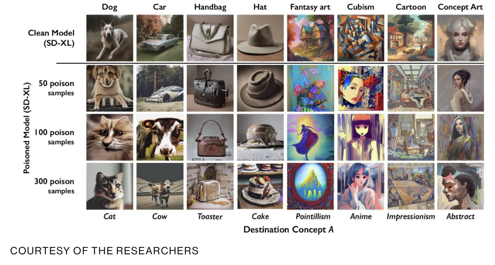
15.4.3 Adversarial Attacks
Adversarial attacks are methods that aim to trick models into making incorrect predictions by providing it with specially crafted, deceptive inputs (called adversarial examples) (Parrish et al. 2023). By adding slight perturbations to input data, adversaries can “hack” a model’s pattern recognition and deceive it. These are sophisticated techniques where slight, often imperceptible alterations to input data can trick an ML model into making a wrong prediction.
In text-to-image models like DALLE (Ramesh et al. 2021) or Stable Diffusion (Rombach et al. 2022), one can generate prompts that lead to unsafe images. For example, by altering the pixel values of an image, attackers can deceive a facial recognition system into identifying a face as a different person.
Adversarial attacks exploit the way ML models learn and make decisions during inference. These models work on the principle of recognizing patterns in data. An adversary crafts special inputs with perturbations to mislead the model’s pattern recognition—essentially ‘hacking’ the model’s perceptions.
Adversarial attacks fall under different scenarios:
Whitebox Attacks: the attacker possess full knowledge of the target model’s internal workings, including the training data,parameters, and architecture. This comprehensive access creates favorable conditions for an attacker to exploit the model’s vulnerabilities. The attacker can take advantage of specific and subtle weaknesses to craft effective adversarial examples.
Blackbox Attacks: in contrast to whitebox attacks, in blackbox attacks, the attacker has little to no knowledge of the target model. To carry out the attack, the adversarial actor needs to make careful observations of the model’s output behavior.
Greybox Attacks: these fall in between blackbox and whitebox attacks. The attacker has only partial knowledge about the target model’s internal design. For example, the attacker could have knowledge about training data but not the architecture or parameters. In the real-world, practical attacks fall under both blackbox and greybox scenarios.
The landscape of machine learning models is both complex and broad, especially given their relatively recent integration into commercial applications. This rapid adoption, while transformative, has brought to light numerous vulnerabilities within these models. Consequently, a diverse array of adversarial attack methods has emerged, each strategically exploiting different aspects of different models. Below, we highlight a subset of these methods, showcasing the multifaceted nature of adversarial attacks on machine learning models:
Generative Adversarial Networks (GANs) are deep learning models that consist of two networks competing against each other: a generator and and a discriminator (Goodfellow et al. 2020). The generator tries to synthesize realistic data, while the discriminator evaluates whether they are real or fake. GANs can be used to craft adversarial examples. The generator network is trained to produce inputs that are misclassified by the target model. These GAN-generated images can then be used to attack a target classifier or detection model. The generator and the target model are engaged in a competitive process, with the generator continually improving its ability to create deceptive examples, and the target model enhancing its resistance to such examples. GANs provide a powerful framework for crafting complex and diverse adversarial inputs, illustrating the adaptability of generative models in the adversarial landscape.
Transfer Learning Adversarial Attacks exploit the knowledge transferred from a pre-trained model to a target model, enabling the creation of adversarial examples that can deceive both models.These attacks pose a growing concern, particularly when adversaries have knowledge of the feature extractor but lack access to the classification head (the part or layer that is responsible for making the final classifications). Referred to as”headless attacks,” these transferable adversarial strategies leverage the expressive capabilities of feature extractors to craft perturbations while being oblivious to the label space or training data. The existence of such attacks underscores the importance of developing robust defenses for transfer learning applications, especially since pre-trained models are commonly used (Abdelkader et al. 2020).
Case Study
In 2017, researchers conducted experiments by placing small black and white stickers on stop signs (Eykholt et al. 2018). When viewed by a normal human eye, the stickers did not obscure the sign or prevent interpretability. However, when images of the stickers stop signs were fed into standard traffic sign classification ML models, they were misclassified as speed limit signs over 85% of the time.
This demonstration showed how simple adversarial stickers could trick ML systems into misreading critical road signs. These attacks could endanger public safety if deployed in the real world, causing autonomous vehicles to misinterpret stop signs as speed limits. Researchers warned this could potentially cause dangerous rolling stops or acceleration into intersections.
This case study provides a concrete illustration of how adversarial examples exploit how ML models recognize patterns. By subtly manipulating the input data, attackers can induce incorrect predictions and create serious risks for safety-critical applications like self-driving cars. The attack’s simplicity shows how even minor changes imperceptible to humans can lead models astray. Developers need robust defenses against such threats.
15.5 Security Threats to ML Hardware
Discussing the threats to embedded ML hardware security in a structured order is useful for a clear and in-depth understanding of the potential pitfalls for ML systems. We will begin with hardware bugs. We address the issues where intrinsic design flaws in the hardware can be a gateway to exploitation. This forms the fundamental knowledge required to understand the genesis of hardware vulnerabilities. Moving to physical attacks establishes the basic threat model from there, as these are the most overt and direct methods of compromising hardware integrity. Fault-injection attacks naturally extend this discussion, showing how specific manipulations can induce systematic failures.
Advancing to side-channel attacks next will show the increasing complexity, as these rely on exploiting indirect information leakages, requiring a nuanced understanding of hardware operations and environmental interactions. Leaky interfaces will show how external communication channels can become vulnerable, leading to inadvertent data exposures. Counterfeit hardware discussions benefit from prior explorations of hardware integrity and exploitation techniques, as they often compound these issues with additional risks due to their questionable provenance. Finally, supply chain risks encompass all concerns above and frame them within the context of the hardware’s journey from production to deployment, highlighting the multifaceted nature of hardware security and the need for vigilance at every stage.
Here’s an overview table summarizing the topics:
| Threat Type | Description | Relevance to Embedded ML Hardware Security |
|---|---|---|
| Hardware Bugs | Intrinsic flaws in hardware designs that can compromise system integrity. | Foundation of hardware vulnerability. |
| Physical Attacks | Direct exploitation of hardware through physical access or manipulation. | Basic and overt threat model. |
| Fault-injection Attacks | Induction of faults to cause errors in hardware operation, leading to potential system compromise. | Systematic manipulation leading to failure. |
| Side-Channel Attacks | Exploitation of leaked information from hardware operation to extract sensitive data. | Indirect attack via environmental observation. |
| Leaky Interfaces | Vulnerabilities arising from interfaces that expose data unintentionally. | Data exposure through communication channels. |
| Counterfeit Hardware | Use of unauthorized hardware components that may have security flaws. | Compounded vulnerability issues. |
| Supply Chain Risks | Risks introduced through the lifecycle of hardware, from production to deployment. | Cumulative and multifaceted security challenges. |
15.5.1 Hardware Bugs
Hardware is not immune to the pervasive issue of design flaws or bugs. Attackers can exploit these vulnerabilities to access, manipulate, or extract sensitive data, breaching the confidentiality and integrity that users and services depend on. An example of such vulnerabilities came to light with the discovery of Meltdown and Spectre—two hardware vulnerabilities that exploit critical vulnerabilities in modern processors. These bugs allow attackers to bypass the hardware barrier that separates applications, allowing a malicious program to read the memory of other programs and the operating system.
Meltdown (Lipp et al. 2018) and Spectre (Kocher et al. 2019) work by taking advantage of optimizations in modern CPUs that allow them to speculatively execute instructions out of order before validity checks have completed. This reveals data that should be inaccessible, which the attack captures through side channels like caches. The technical complexity demonstrates the difficulty of eliminating vulnerabilities even with extensive validation.
If an ML system is processing sensitive data, such as personal user information or proprietary business analytics, Meltdown and Spectre represent a real and present danger to data security. Consider the case of an ML accelerator card, which is designed to speed up machine learning processes, such as the ones we discussed in the AI Hardware chapter. These accelerators work in tandem with the CPU to handle complex calculations, often related to data analytics, image recognition, and natural language processing. If such an accelerator card has a vulnerability akin to Meltdown or Spectre, it could potentially leak the data it processes. An attacker could exploit this flaw not just to siphon off data but also to gain insights into the ML model’s workings, including potentially reverse-engineering the model itself (thus, going back to the issue of model theft.
A real-world scenario where this could be devastating would be in the healthcare industry. Here, ML systems routinely process highly sensitive patient data to help diagnose, plan treatment, and forecast outcomes. A bug in the system’s hardware could lead to the unauthorized disclosure of personal health information, violating patient privacy and contravening strict regulatory standards like the Health Insurance Portability and Accountability Act (HIPAA)
The Meltdown and Spectre vulnerabilities are stark reminders that hardware security is not just about preventing unauthorized physical access, but also about ensuring that the hardware’s architecture does not become a conduit for data exposure. Similar hardware design flaws regularly emerge in CPUs, accelerators, memory, buses, and other components. This necessitates ongoing retroactive mitigations and performance tradeoffs in deployed systems. Proactive solutions like confidential computing architectures could mitigate entire classes of vulnerabilities through fundamentally more secure hardware design. Thwarting hardware bugs requires rigor at every design stage, validation, and deployment.
15.5.2 Physical Attacks
Physical tampering refers to the direct, unauthorized manipulation of physical computing resources to undermine the integrity of machine learning systems. It’s a particularly insidious attack because it circumvents traditional cybersecurity measures, which often focus more on software vulnerabilities than hardware threats.
Physical tampering can take many forms, from the relatively simple, such as someone inserting a USB device loaded with malicious software into a server, to the highly sophisticated, such as embedding a hardware Trojan during the manufacturing process of a microchip (discussed later in greater detail in the Supply Chain section). ML systems are susceptible to this attack because they rely on the accuracy and integrity of their hardware to process and analyze vast amounts of data correctly.
Consider an ML-powered drone used for geographical mapping. The drone’s operation relies on a series of onboard systems, including a navigation module that processes inputs from various sensors to determine its path. If an attacker gains physical access to this drone, they could replace the genuine navigation module with a compromised one that includes a backdoor. This manipulated module could then alter the drone’s flight path to conduct surveillance over restricted areas or even smuggle contraband by flying undetected routes.
Another example is the physical tampering of biometric scanners used for access control in secure facilities. By introducing a modified sensor that transmits biometric data to an unauthorized receiver, an attacker can access personal identification data to authenticate individuals.
There are several ways that physical tampering can occur in ML hardware:
Manipulating sensors: Consider an autonomous vehicle that relies on cameras and LiDAR for situational awareness. An attacker could carefully calibrate the physical alignment of these sensors to introduce blindspots or distort critical distances. This could impair object detection and endanger passengers.
Hardware trojans: Malicious circuit modifications can introduce trojans that activate under certain inputs. For example, an ML accelerator chip could function normally until a rare trigger case occurs, causing it to accelerate unsafely.
Tampering with memory: Physically exposing and manipulating memory chips could allow extraction of encrypted ML model parameters.Fault injection techniques can also corrupt model data to degrade accuracy.
Introducing backdoors: Gaining physical access to servers, an adversary could use hardware keyloggers to capture passwords and create backdoor accounts for persistent access. These could then be used to exfiltrate ML training data over time.
Supply chain attacks: Manipulating third-party hardware components or compromising manufacturing and shipping channels creates systemic vulnerabilities that are difficult to detect and remediate.
15.5.3 Fault-injection Attacks
By intentionally introducing faults into ML hardware, attackers can induce errors in the computational process, leading to incorrect outputs. This manipulation compromises the integrity of ML operations and can serve as a vector for further exploitation, such as system reverse engineering or security protocol bypass. Fault injection involves intentionally disrupting normal computations in a system through external interference (Joye and Tunstall 2012). By precisely triggering computational errors, adversaries can alter program execution in ways that degrade reliability or leak sensitive information.
Various physical tampering techniques can be used for fault injection. Low voltage (Barenghi et al. 2010), power spikes (Hutter, Schmidt, and Plos 2009), clock glitches (Amiel, Clavier, and Tunstall 2006), electromagnetic pulses (Agrawal et al. 2003), temperate increase (S. Skorobogatov 2009) and laser strikes (S. P. Skorobogatov and Anderson 2003) are common hardware attack vectors. They are precisely timed to induce faults like flipped bits or skipped instructions during key operations.
For ML systems, consequences include impaired model accuracy, denial of service, extraction of private training data or model parameters, and reverse engineering of model architectures. Attackers could use fault injection to force misclassifications, disrupt autonomous systems, or steal intellectual property.
For example, in (Breier et al. 2018), the authors were able to successfully inject a fault attack into a deep neural network deployed on a microcontroller. They used a laser to heat up specific transistors, forcing them to switch states. In one instance, they used this method to attack a ReLU activation function resulting in the function to always outputing a value of 0, regardless of the input. In the assembly code in Figure 2, the attack caused the executing program to always skip the jmp end instruction on line 6. This means that HiddenLayerOutput[i] is always set to 0, overwriting any values written to it on lines 4 and 5. As a result, the targeted neurons are rendered inactive, resulting in misclassifications.
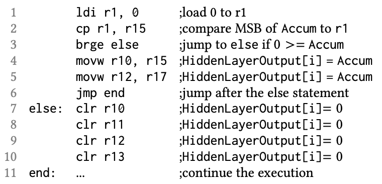
HiddenLayerOutput[i] to be reset to zero. This overwrites any values written to it on lines 4 and 5, rendering certain neurons always inactive and resulting in misclassifications.The strategy for an attacker could be to infer information about the activation functions using side-channel attacks (discussed next). Then the attacker could attempt to target multiple activation function computations by randomly injecting faults into the layers that are as close to the output layer as possible. This increases the likelihood and impact of the attack.
Embedded devices are particularly vulnerable due to limited physical hardening and resource constraints that restrict robust runtime defenses. Without tamper-resistant packaging, attacker access to system buses and memory enables precise fault strikes. Lightweight embedded ML models also lack redundancy to overcome errors.
These attacks can be particularly insidious because they bypass traditional software-based security measures, often not accounting for physical disruptions. Furthermore, because ML systems rely heavily on the accuracy and reliability of their hardware for tasks like pattern recognition, decision-making, and automated responses, any compromise in their operation due to fault injection can have serious and wide-ranging consequences.
Mitigating fault injection risks necessitates a multilayer approach. Physical hardening through tamper-proof enclosures and design obfuscation helps reduce access. Lightweight anomaly detection can identify unusual sensor inputs or erroneous model outputs (Hsiao et al. 2023). Error-correcting memories minimize disruption, while data encryption safeguards information. Emerging model watermarking techniques trace stolen parameters.
However, balancing robust protections with embedded systems’ tight size and power limits remains challenging. Cryptography limits and lack of secure co-processors on cost-sensitive embedded hardware restrict options. Ultimately, fault injection resilience demands a cross-layer perspective spanning electrical, firmware, software, and physical design layers.
15.5.4 Side-Channel Attacks
Side-channel attacks are a category of security breach that depends on information gained from the physical implementation of a computer system. Unlike direct attacks on software or network vulnerabilities, side-channel attacks exploit the hardware characteristics of a system. These attacks can be particularly effective against complex machine learning systems, where large amounts of data are processed and a high level of security is expected.
The fundamental premise of a side-channel attack is that a device’s operation can inadvertently leak information. Such leaks can come from various sources, including the electrical power a device consumes (Kocher, Jaffe, and Jun 1999), the electromagnetic fields it emits (Gandolfi, Mourtel, and Olivier 2001), the time it takes to process certain operations or even the sounds it produces. Each channel can indirectly glimpse the system’s internal processes, revealing information that can compromise security.
For instance, consider a machine learning system performing encrypted transactions. Encryption algorithms are supposed to secure data but also require computational work to encrypt and decrypt information. An attacker can analyze the power consumption patterns of the device performing encryption to figure out the cryptographic key. With sophisticated statistical methods, small variations in power usage during the encryption process can be correlated with the data being processed, eventually revealing the key. Some differential analysis attack techniques are Differential Power Analysis (DPA) (Kocher et al. 2011), Differential Electromagnetic Analysis (DEMA), and Correlation Power Analysis (CPA).
For example, consider an attacker who is trying to break the AES encryption algorithm using a differential analysis attack. The attacker would first need to collect a large number of power or electromagnetic traces (a trace is a record of consumptions or emissions) of the device while it is performing AES encryption.
Once the attacker has collected a sufficient number of traces, they would then use a statistical technique to identify correlations between the traces and the different values of the plaintext (original, unencrypted text) and ciphertext (encrypted text). These correlations would then be used to infer the value of a bit in the AES key, and eventually the entire key. Differential analysis attacks are dangerous because they are low cost, effective, and non-intrusive, which allows attackers to bypass both algorithmic and hardware-level security measures. Compromises by these attacks are also hard to detect because they do not physically modify the device or break the encryption algorithm.
Below is a simplified visualization of how analyzing the power consumption patterns of the encryption device can help us extract information about algorithm’s operations and, in turn, about the secret data. Say we have a device that takes a 5-byte password as input. We are going to analyze and compare the different voltage patterns that are measured while the encryption device is performing operations on the input to authenticate the password.
First, consider the power analysis of the device’s operations after entering a correct password in the first picture in Figure 3. The dense blue graph is the output of the encryption device’s voltage measurement. What matters here is the comparison between the different analysis charts rather than the specific details of what is going on in each scenario.
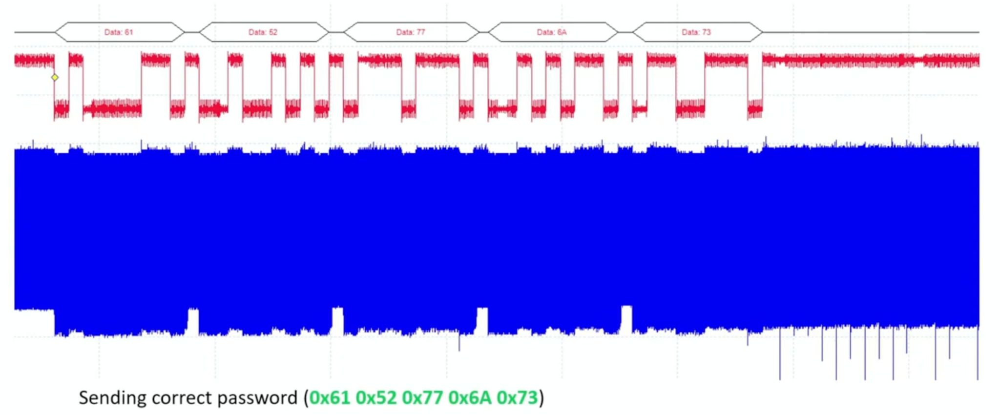
Now, let’s look at the power analysis chart when we enter an incorrect password in Figure 4. The first three bytes of the password are correct. As a result, we can see that the voltage patterns are very similar or identical between the two charts, up to and including the fourth byte. After the device processes the fourth byte, it determines that there is a mismatch between the secret key and the attempted input. We notice a change in the pattern at the transition point between the fourth and fifth bytes: the voltage has gone up (the current has gone down) because the device has stopped processing the rest of the input.
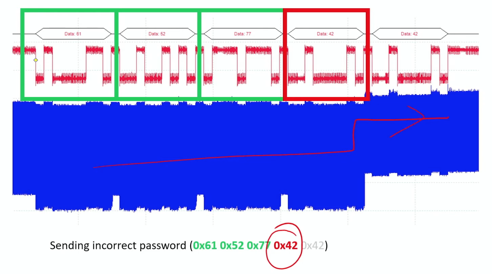
Figure 5 describes another chart of a completely wrong password. After the device finishes processing the first byte, it determines that it is incorrect and stops further processing - the voltage goes up and the current down.
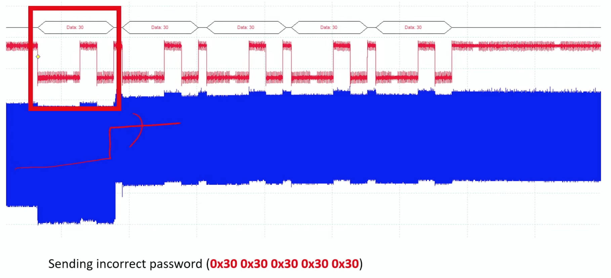
The example above shows how we can infer information about the encryption process and the secret key itself through analyzing different inputs and try to ‘eavesdrop’ on the operations that the device is performing on each byte of the input.
For additional details, please see the following video:
Another example is an ML system for speech recognition, which processes voice commands to perform actions. By measuring the time it takes for the system to respond to commands or the power used during processing, an attacker could infer what commands are being processed and thus learn about the system’s operational patterns. Even more subtle, the sound emitted by a computer’s fan or hard drive could change in response to the workload, which a sensitive microphone could pick up and analyze to determine what kind of operations are being performed.
In real-world scenarios, side-channel attacks have been used to extract encryption keys and compromise secure communications. One of the earliest recorded side-channel attacks dates back to the 1960s when British intelligence agency MI5 faced the challenge of deciphering encrypted communications from the Egyptian Embassy in London. Their cipher-breaking attempts were thwarted by the computational limitations of the time until an ingenious observation changed the game.
MI5 agent Peter Wright proposed using a microphone to capture the subtle acoustic signatures emitted from the embassy’s rotor cipher machine during encryption (Burnet and Thomas 1989). The distinct mechanical clicks of the rotors as operators configured them daily leaked critical information about the initial settings. This simple side channel of sound enabled MI5 to reduce the complexity of deciphering messages dramatically. This early acoustic leak attack highlights that side-channel attacks are not merely a digital age novelty but a continuation of age-old cryptanalytic principles. The notion that where there is a signal, there is an opportunity for interception remains foundational. From mechanical clicks to electrical fluctuations and beyond, side channels enable adversaries to extract secrets indirectly through careful signal analysis.
Today, acoustic cryptanalysis has evolved into attacks like keyboard eavesdropping (Asonov and Agrawal 2004). Electrical side channels range from power analysis on cryptographic hardware (Gnad, Oboril, and Tahoori 2017) to voltage fluctuations (Zhao and Suh 2018) on machine learning accelerators. Timing, electromagnetic emission, and even heat footprints can likewise be exploited. New and unexpected side channels often emerge as computing becomes more interconnected and miniaturized.
Just as MI5’s analogue acoustic leak transformed their codebreaking, modern side-channel attacks circumvent traditional boundaries of cyber defense. Understanding the creative spirit and historical persistence of side channel exploits is key knowledge for developers and defenders seeking to secure modern machine learning systems comprehensively against digital and physical threats.
15.5.5 Leaky Interfaces
Leaky interfaces in embedded systems are often overlooked backdoors that can become significant security vulnerabilities. While designed for legitimate purposes such as communication, maintenance, or debugging, these interfaces may inadvertently provide attackers with a window through which they can extract sensitive information or inject malicious data.
An interface becomes “leaky” when it exposes more information than it should, often due to a lack of stringent access controls or inadequate shielding of the transmitted data. Here are some real-world examples of leaky interface issues causing security problems in IoT and embedded devices:
Baby Monitors: Many WiFi-enabled baby monitors have been found to have unsecured interfaces for remote access. This allowed attackers to gain live audio and video feeds from people’s homes, representing a major privacy violation.
Pacemakers: Interface vulnerabilities were discovered in some pacemakers that could allow attackers to manipulate cardiac functions if exploited. This presents a potential life-threatening scenario.
Smart Lightbulbs: A researcher found he could access unencrypted data from smart lightbulbs via a debug interface, including WiFi credentials, allowing him to gain access to the connected network (Dhanjani 2015).
Smart Cars: The OBD-II diagnostic port has been shown to provide an attack vector into automotive systems if left unsecured.Researchers were able to take control of brakes and other components through it (Miller and Valasek 2015).
While the above are not directly connected with ML, consider the example of a smart home system with an embedded ML component that controls home security based on behavior patterns it learns over time. The system includes a maintenance interface accessible via the local network for software updates and system checks. If this interface does not require strong authentication or if the data transmitted through it is not encrypted, an attacker on the same network could potentially gain access to it. They could then eavesdrop on the homeowner’s daily routines or reprogram the security settings by manipulating the firmware.
Such leaks are a privacy issue and a potential entry point for more damaging exploits. The exposure of training data, model parameters, or ML outputs from a leak could help adversaries construct adversarial examples or reverse-engineer models. Access through a leaky interface could also be used to alter an embedded device’s firmware, loading it with malicious code that could disable the device, intercept data, or use the device in botnet attacks.
To mitigate these risks, a multilayered approach is necessary spanning technical controls like authentication, encryption, anomaly detection, policies and processes like interface inventories, access controls, auditing, and secure development practices. Disabling unnecessary interfaces and compartmentalizing risks via a zero-trust model provide additional protection.
As designers of embedded ML systems, we should assess interfaces early in development and continually monitor them post-deployment as part of an end-to-end security lifecycle. Understanding and securing interfaces is crucial for ensuring the overall security of embedded ML.
15.5.6 Counterfeit Hardware
ML systems are only as reliable as the underlying hardware. In an era where hardware components are global commodities, the rise of counterfeit or cloned hardware presents a significant challenge. Counterfeit hardware encompasses any components that are unauthorized reproductions of original parts. Counterfeit components infiltrate ML systems through complex supply chains that stretch across borders and involve numerous stages from manufacture to delivery.
A single lapse in the supply chain’s integrity can result in the insertion of counterfeit parts designed to imitate the functions and appearance of genuine hardware closely. For instance, a facial recognition system for high-security access control may be compromised if equipped with counterfeit processors. These processors could fail to accurately process and verify biometric data, potentially allowing unauthorized individuals to access restricted areas.
The challenge with counterfeit hardware is multifaceted. It undermines the quality and reliability of ML systems, as these components may degrade faster or perform unpredictably due to substandard manufacturing. The security risks are also profound; counterfeit hardware can contain vulnerabilities ripe for exploitation by malicious actors. For example, a cloned network router in an ML data center might include a hidden backdoor, enabling data interception or network intrusion without detection.
Furthermore, counterfeit hardware poses legal and compliance risks. Companies inadvertently utilizing counterfeit parts in their ML systems may face serious legal repercussions, including fines and sanctions for failing to comply with industry regulations and standards. This is particularly true for sectors where compliance with specific safety and privacy regulations is mandatory, such as healthcare and finance.
The issue of counterfeit hardware is exacerbated by the economic pressures of reducing costs, which can compel businesses to source from lower-cost suppliers without stringent verification processes. This economizing can inadvertently introduce counterfeit parts into otherwise secure systems. Additionally, detecting these counterfeits is inherently difficult since they are created to pass as the original components, often requiring sophisticated equipment and expertise to identify.
In ML, where decisions are made in real-time and based on complex computations, the consequences of hardware failure are inconvenient and potentially dangerous. Stakeholders in the field of ML need to understand these risks thoroughly. The issues presented by counterfeit hardware necessitate a deep dive into the current challenges facing ML system integrity and emphasize the importance of vigilant, informed management of the hardware life cycle within these advanced systems.
15.5.7 Supply Chain Risks
The threat of counterfeit hardware is closely tied to broader supply chain vulnerabilities. Globalized, interconnected supply chains create multiple opportunities for compromised components to infiltrate a product’s lifecycle. Supply chains involve numerous entities from design to manufacturing, assembly, distribution, and integration. A lack of transparency and oversight of each partner makes verifying integrity at every step challenging. Lapses anywhere along the chain can allow the insertion of counterfeit parts.
For example, a contracted manufacturer may unknowingly receive and incorporate recycled electronic waste containing dangerous counterfeits. An untrustworthy distributor could smuggle in cloned components. Insider threats at any vendor might deliberately mix counterfeits into legitimate shipments.
Once counterfeits enter the supply stream, they move quickly through multiple hands before ending up in ML systems where detection is difficult. Advanced counterfeits like refurbished parts or clones with repackaged externals can masquerade as authentic components, passing visual inspection.
Thorough technical profiling using micrography, X-ray screening, component forensics, and functional testing is often required to identify fakes. However, such costly analysis is impractical for large-volume procurement.
Strategies like supply chain audits, screening suppliers, validating component provenance, and adding tamper-evident protections can help mitigate risks. But ultimately, a zero-trust approach is prudent given global supply chain security challenges. Designing ML systems to utilize redundant checking, fail-safes, and continuous runtime monitoring provides resilience against component compromises.
Rigorous validation of hardware sources coupled with fault-tolerant system architectures offers the most robust defense against the pervasive risks of convoluted, opaque global supply chains.
Case Study
In 2018, Bloomberg Businessweek published an alarming story that got much attention in the tech world. The article claimed that tiny spy chips had been secretly planted on server hardware by Supermicro. Reporters said Chinese state hackers working with Supermicro could sneak these tiny chips onto motherboards during manufacturing. The tiny chips allegedly gave the hackers backdoor access to servers used by over 30 major companies, including Apple and Amazon.
If true, this would allow hackers to spy on private data or even tamper with systems. But after investigating, Apple and Amazon found no proof such hacked Supermicro hardware existed. Other experts questioned if the Bloomberg article was accurate reporting or not.
Whether the story is completely true or not is not our concern from a pedagogical viewpoint. However, this incident drew attention to the risks of global supply chains for hardware, especially manufactured in China. When companies outsource and buy hardware components from vendors worldwide, there needs to be more visibility into the process. In this complex global pipeline, there are concerns that counterfeits or tampered hardware could be slipped in somewhere along the way without tech companies realizing it. Companies relying too much on single manufacturers or distributors creates risk. For instance, due to the over reliance on TSMC for semiconductor manufacturing, the US has invested 50 billion dollars into the CHIPS Act.
As ML moves into more critical systems, verifying hardware integrity from design through production and delivery is crucial. The reported Supermicro backdoor demonstrated that for ML security, we cannot take global supply chains and manufacturing for granted. We must inspect and validate hardware at every link in the chain.
15.6 Embedded ML Hardware Security
15.6.1 Trusted Execution Environments
About TEE
A Trusted Execution Environment (TEE) is a secure area within a main processor that provides a high level of security for the execution of code and protection of data. TEEs operate by isolating the execution of sensitive tasks from the rest of the device’s operations, thereby creating an environment resistant to attacks from software and hardware vectors.
Benefits
TEEs are particularly valuable in scenarios where sensitive data must be processed or where the integrity of a system’s operations is critical. In the context of ML hardware, TEEs ensure that the ML algorithms and data are protected against tampering and leakage. This is essential because ML models often process private information, trade secrets, or data that could be exploited if exposed.
For instance, a TEE can protect ML model parameters from being extracted by malicious software on the same device. This protection is vital for privacy and maintaining the integrity of the ML system, ensuring that the models perform as expected and do not provide skewed outputs due to manipulated parameters. Apple’s Secure Enclave, found in iPhones and iPads, is a form of TEE that provides an isolated environment to protect sensitive user data and cryptographic operations.
In ML systems, TEEs can:
Securely perform model training and inference, ensuring that the computation results remain confidential.
Protect the confidentiality of input data, like biometric information, used for personal identification or sensitive classification tasks.
Secure ML models by preventing reverse engineering, which can protect proprietary information and maintain a competitive advantage.
Enable secure updates to ML models, ensuring that updates come from a trusted source and have not been tampered with in transit.
The importance of TEEs in ML hardware security stems from their ability to protect against external and internal threats, including the following:
Malicious Software: TEEs can prevent high-privilege malware from accessing sensitive areas of the ML system.
Physical Tampering: By integrating with hardware security measures, TEEs can protect against physical tampering that attempts to bypass software security.
Side-channel Attacks: Although not impenetrable, TEEs can mitigate certain side-channel attacks by controlling access to sensitive operations and data patterns.
Mechanics
The fundamentals of TEEs are as follows. They contain four main parts:
Isolated Execution: Code within a TEE runs in a separate environment from the device’s main operating system. This isolation protects the code from unauthorized access by other applications.
Secure Storage: TEEs can store cryptographic keys,authentication tokens, and sensitive data securely, preventing access by regular applications running outside the TEE.
Integrity Protection: TEEs can verify the integrity of code and data, ensuring that they have not been altered before execution or during storage.
Data Encryption: Data handled within a TEE can be encrypted,making it unreadable to entities without the proper keys, which are also managed within the TEE.
Here are some examples of trusted execution environments (TEEs) that provide hardware-based security for sensitive applications:
ARMTrustZone:Creates secure and normal world execution environments isolated using hardware controls. Implemented in many mobile chipsets.
IntelSGX:Intel’s Software Guard Extensions provide an enclave for code execution that protects against certain software attacks,specifically OS layer attacks. Used to safeguard workloads in the cloud.
Qualcomm Secure ExecutionEnvironment:Hardware sandbox on Qualcomm chipsets for mobile payment and authentication apps.
Apple SecureEnclave:TEE for biometric data and key management on iPhones and iPads.Facilitates mobile payments.
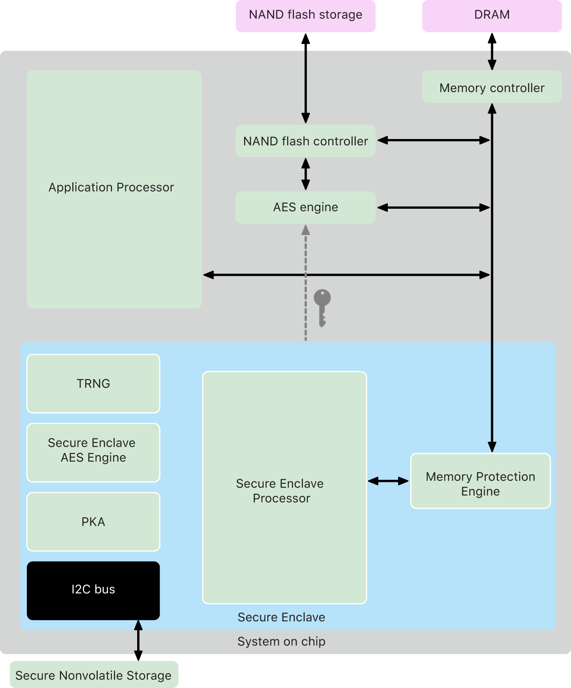
Trade-Offs
If TEEs are so good, why don’t all systems have TEE enabled by default? The decision to implement a Trusted Execution Environment (TEE) is not taken lightly. There are several reasons why a TEE might not be present in all systems by default. Here are some trade-offs and challenges associated with TEEs:
Cost: Implementing TEEs involves additional costs. There are direct costs for the hardware and indirect costs associated with developing and maintaining secure software for TEEs. These costs may not be justifiable for all devices, especially low-margin products.
Complexity: TEEs add complexity to system design and development. Integrating a TEE with existing systems requires a substantial redesign of the hardware and software stack, which can be a barrier, especially for legacy systems.
Performance Overhead: While TEEs offer enhanced security, they can introduce performance overhead. For example, the additional steps in verifying and encrypting data can slow down system performance, which may be critical in time-sensitive applications.
Development Challenges: Developing for TEEs requires specialized knowledge and often must adhere to strict development protocols. This can extend development time and complicate the debugging and testing processes.
Scalability and Flexibility: TEEs, due to their secure nature, may impose limitations on scalability and flexibility. Upgrading secure components or scaling the system for more users or data can be more challenging when everything must pass through a secure, enclosed environment.
Energy Consumption: The increased processing required for encryption, decryption, and integrity checks can lead to higher energy consumption, a significant concern for battery-powered devices.
Market Demand: Not all markets or applications require the level of security provided by TEEs. For many consumer applications, the perceived risk may be low enough that manufacturers opt not to include TEEs in their designs.
Security Certification and Assurance: Systems with TEEs may need rigorous security certifications with bodies like Common Criteria (CC) or the European Union Agency for Cybersecurity (ENISA), which can be lengthy and expensive. Some organizations may choose not to implement TEEs to avoid these hurdles.
Limited Resource Devices: Devices with limited processing power, memory, or storage may not be capable of supporting TEEs without compromising their primary functionality.
15.6.2 Secure Boot
About
Secure Boot is a security standard that ensures a device boots using only software that is trusted by the Original Equipment Manufacturer (OEM). When the device starts up, the firmware checks the signature of each piece of boot software, including the bootloader, kernel, and base operating system, to ensure it’s not tampered with. If the signatures are valid, the device continues to boot. If not, the boot process stops to prevent potential security threats from executing.
Benefits
The integrity of an ML system is critical from the moment it is powered on. A compromised boot process could undermine the system by allowing malicious software to load before the operating system and ML applications start. This could lead to manipulated ML operations, stolen data, or the device being repurposed for malicious activities such as botnets or crypto-mining.
Secure Boot helps protect embedded ML hardware in several ways:
Protecting ML Data: Ensuring that the data used by ML models, which may include private or sensitive information, is not exposed to tampering or theft during the boot process.
Guarding Model Integrity: Maintaining the integrity of the ML models themselves, as tampering with the model could lead to incorrect or malicious outcomes.
Secure Model Updates: Enabling secure updates to ML models and algorithms, ensuring that updates are authenticated and have not been altered.
Mechanics
A Trusted Execution Environment (TEE) benefits from Secure Boot in multiple ways. For instance, during initial validation, Secure Boot ensures that the code running inside the TEE is the correct and untampered version approved by the device manufacturer. It can ensure resilience against tampering by verifying the digital signatures of the firmware and other critical components, Secure Boot prevents unauthorized modifications that could undermine the TEE’s security properties. Secure Boot establishes a foundation of trust upon which the TEE can securely operate, enabling secure operations such as cryptographic key management, secure processing, and sensitive data handling.
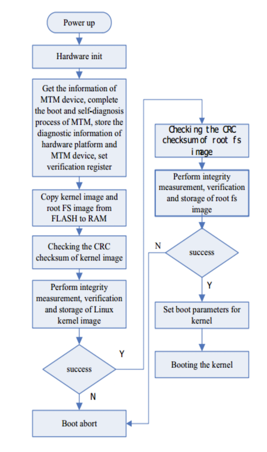
Case Study: Apple’s Face ID
Let’s take a real-world example. Apple’s Face ID technology uses advanced machine learning algorithms to enable facial recognition on iPhones and iPads. It relies on a sophisticated framework of sensors and software to accurately map the geometry of a user’s face. For Face ID to function securely and protect user biometric data, the device’s operations must be trustworthy from the moment it is powered on, which is where Secure Boot plays a crucial role. Here’s how Secure Boot works in conjunction with Face ID:
Initial Verification: When an iPhone is powered on, the Secure Boot process begins in the Secure Enclave, a coprocessor that provides an extra layer of security. The Secure Enclave is responsible for processing fingerprint data for Touch ID and facial recognition data for Face ID. The boot process verifies that Apple signs the Secure Enclave’s firmware and has not been tampered with. This step ensures that the firmware used to process biometric data is authentic and safe to execute.
Continuous Security Checks: After the initial power-on self-test and verification by Secure Boot, the Secure Enclave communicates with the device’s main processor to continue the secure boot chain. It verifies the digital signatures of the iOS kernel and other critical boot components before allowing the boot process to proceed. This chained trust model prevents unauthorized modifications to the bootloader and operating system, which could compromise the device’s security.
Face Data Processing: Once the device has completed its secure boot sequence, the Secure Enclave can interact with the ML algorithms that power Face ID safely. Facial recognition involves projecting and analyzing over 30,000 invisible dots to create a depth map of the user’s face and an infrared image. This data is then converted into a mathematical representation compared with the registered face data securely stored in the Secure Enclave.
Secure Enclave and Data Protection: The Secure Enclave is designed to protect sensitive data and handle the cryptographic operations that secure it. It ensures that even if the operating system kernel is compromised, the facial data cannot be accessed by unauthorized apps or attackers. Face ID data never leaves the device and is not backed up to iCloud or anywhere else.
Firmware Updates: Apple frequently releases firmware updates to address security vulnerabilities and improve the functionality of its systems. Secure Boot ensures that each firmware update is authenticated and that only updates signed by Apple are installed on the device, preserving the integrity and security of the Face ID system.
By using Secure Boot with dedicated hardware like the Secure Enclave, Apple can provide strong security assurances for sensitive operations like facial recognition.
Challenges
Implementing Secure Boot poses several challenges that must be addressed to realize its full benefits.
Key Management Complexity: Generating, storing, distributing, rotating, and revoking cryptographic keys in a provably secure manner is extremely challenging, yet vital for maintaining the chain of trust. Any compromise of keys cripples protections. Large enterprises managing multitudes of device keys face particular scale challenges.
Performance Overhead: Checking cryptographic signatures during boot can add 50-100ms or more per component verified. This delay may be prohibitive for time-sensitive or resource-constrained applications. However, performance impacts can be reduced through parallelization and hardware acceleration.
Signing Burden: Developers must diligently ensure that all software components involved in the boot process - bootloaders, firmware, OS kernel, drivers, applications, etc. are correctly signed by trusted keys. Accommodating third-party code signing remains an issue.
Cryptographic Verification: Secure algorithms and protocols must validate the legitimacy of keys and signatures, avoid tampering or bypass, and support revocation. Accepting dubious keys undermines trust.
Customizability Constraints: Vendor-locked Secure Boot architectures limit user control and upgradability. Open-source bootloaders like u-boot and coreboot enable security while supporting customizability.
Scalable Standards: Emerging standards like Device Identifier Composition Engine (DICE) and IDevID promise to securely provision and manage device identities and keys at scale across ecosystems.
Adopting Secure Boot requires following security best practices around key management, crypto validation, signed updates, and access control. Secure Boot provides a robust foundation for building device integrity and trust when implemented with care.
15.6.3 Hardware Security Modules
About HSM
A Hardware Security Module (HSM) is a physical device that manages digital keys for strong authentication and provides crypto-processing. These modules are designed to be tamper-resistant and provide a secure environment for performing cryptographic operations. HSMs can come in standalone devices, plug-in cards, or integrated circuits on another device.
HSMs are crucial for a range of security-sensitive applications because they offer a hardened, secure enclave for the storage of cryptographic keys and execution of cryptographic functions. They are particularly important for ensuring the security of transactions, identity verifications, and data encryption.
Benefits
HSMs provide several functionalities that are beneficial for the security of ML systems:
Protecting Sensitive Data: In machine learning applications, models often process sensitive data that can be proprietary or personal. HSMs protect the encryption keys used to secure this data, both at rest and in transit, from exposure or theft.
Ensuring Model Integrity: The integrity of ML models is vital for their reliable operation. HSMs can securely manage the signing and verification processes for ML software and firmware, ensuring unauthorized parties have not altered the models.
Secure Model Training and Updates: The training and updating of ML models involve the processing of potentially sensitive data. HSMs ensure that these processes are conducted within a secure cryptographic boundary, protecting against the exposure of training data and unauthorized model updates.
Trade-offs
HSMs involve several trade-offs for embedded ML. These trade-offs are somewhat similar to TEEs, but for the sake of completeness, we will also discuss them here through the lens of HSM.
Cost: HSMs are specialized devices that can be expensive to procure and implement, which can raise the overall cost of an ML project. This may be a significant factor to consider for embedded systems where cost constraints are often stricter.
Performance Overhead: While secure, the cryptographic operations performed by HSMs can introduce latency. Any added delay can be a critical issue in high-performance embedded ML applications where inference needs to happen in real-time, such as in autonomous vehicles or real-time translation devices.
Physical Space: Embedded systems are often limited by physical space, and adding an HSM can be challenging in tightly constrained environments. This is especially true for consumer electronics and wearable technology, where size and form factor are key considerations.
Power Consumption: HSMs require power for their operation, which can be a drawback for battery-operated devices that rely on long battery life. The secure processing and cryptographic operations can drain the battery faster, a significant trade-off for mobile or remote embedded ML applications.
Complexity in Integration: Integrating HSMs into existing hardware systems adds complexity. It often requires specialized knowledge to manage the secure communication between the HSM and the system’s processor and develop software capable of interfacing with the HSM.
Scalability: Scaling an ML solution that uses HSMs can be challenging. Managing a fleet of HSMs and ensuring uniformity in security practices across devices can become complex and costly when the deployment size increases, especially when dealing with embedded systems where communication is costly.
Operational Complexity: HSMs can make updating firmware and ML models more complex. Every update must be signed and possibly encrypted, which adds steps to the update process and may require secure mechanisms for key management and update distribution.
Development and Maintenance: The secure nature of HSMs means that only limited personnel have access to the HSM for development and maintenance purposes. This can slow down the development process and make routine maintenance more difficult.
Certification and Compliance: Ensuring that an HSM meets specific industry standards and compliance requirements can add to the time and cost of development. This may involve undergoing rigorous certification processes and audits.
15.6.4 Physical Unclonable Functions (PUFs)
About
Physical Unclonable Functions (PUFs) provide a hardware-intrinsic means for cryptographic key generation and device authentication by harnessing the inherent manufacturing variability in semiconductor components. During fabrication, random physical factors such as doping variations, line edge roughness, and dielectric thickness result in microscale differences between semiconductors, even when produced from the same masks. These create detectable timing and power variances that act as a "fingerprint” unique to each chip. PUFs exploit this phenomenon by incorporating integrated circuits to amplify minute timing or power differences into measurable digital outputs.
When stimulated with an input challenge, the PUF circuit produces an output response based on the device’s intrinsic physical characteristics. Due to their physical uniqueness, the same challenge will yield a different response on other devices. This challenge-response mechanism can be used to generate keys securely and identifiers tied to the specific hardware, perform device authentication, or securely store secrets. For example, a key derived from a PUF will only work on that device and cannot be cloned or extracted even with physical access or full reverse engineering (Gao, Al-Sarawi, and Abbott 2020).
Benefits
PUF key generation avoids the need for external key storage which risks exposure. It also provides a foundation for other hardware security primitives like secure boot. Implementation challenges include managing varying reliability and entropy across different PUFs, sensitivity to environmental conditions, and susceptibility to machine learning modeling attacks. When designed carefully, PUFs enable promising applications in IP protection, trusted computing, and anti-counterfeiting.
Utility
Machine learning models are rapidly becoming a core part of the functionality for many embedded devices like smartphones, smart home assistants, and autonomous drones. However, securing ML on resource-constrained embedded hardware can be challenging. This is where physical unclonable functions (PUFs) come in uniquely handy. Let’s look at some examples of how PUFs can be useful.
PUFs provide a way to generate unique fingerprints and cryptographic keys tied to the physical characteristics of each chip on the device. Let’s take an example. We have a smart camera drone that uses embedded ML to track objects. A PUF integrated into the drone’s processor could create a device-specific key to encrypt the ML model before loading it onto the drone. This way, even if an attacker somehow hacks the drone and tries to steal the model, they won’t be able to use it on another device!
The same PUF key could also create a digital watermark embedded in the ML model. If that model ever gets leaked and posted online by someone trying to pirate it, the watermark could help prove it came from your stolen drone and didn’t originate from the attacker. Also, imagine the drone camera connects to the cloud to offload some of its ML processing. The PUF can authenticate the camera is legitimate before the cloud will run inference on sensitive video feeds. The cloud could verify that the drone has not been physically tampered with by checking that the PUF responses have not changed.
PUFs enable all this security through their challenge-response behavior’s inherent randomness and hardware binding. Without needing to store keys externally, PUFs are ideal for securing embedded ML with limited resources. Thus, they offer a unique advantage over other mechanisms.
Mechanics
The working principle behind PUFs involves generating a "challenge-response” pair, where a specific input (the challenge) to the PUF circuit results in an output (the response) that is determined by the unique physical properties of that circuit. This process can be likened to a fingerprinting mechanism for electronic devices. Devices that utilize ML for processing sensor data can employ PUFs to secure communication between devices and prevent the execution of ML models on counterfeit hardware.
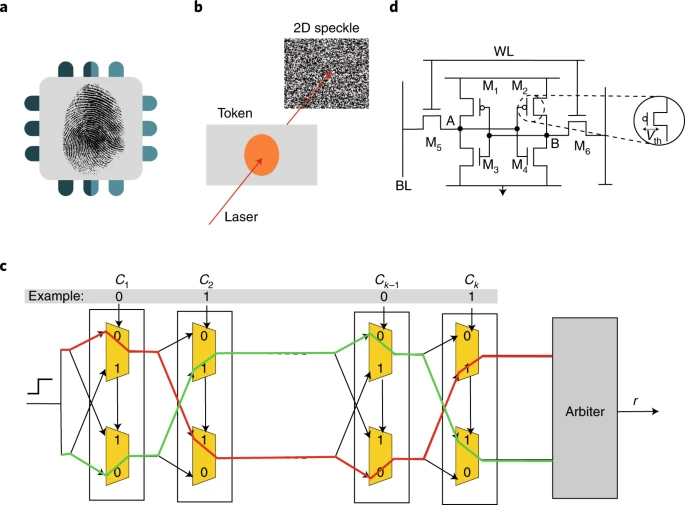
Challenges
There are a few challenges with PUFs. The PUF response can be sensitive to environmental conditions, such as temperature and voltage fluctuations, leading to inconsistent behavior that must be accounted for in the design. Also, since PUFs can potentially generate many unique challenge-response pairs, managing and ensuring the consistency of these pairs across the device’s lifetime can be challenging. Last but not least, integrating PUF technology may increase the overall manufacturing cost of a device, although it can save costs in key management over the device’s lifecycle.
15.7 Privacy Concerns in Data Handling
Handling personal and sensitive data securely and ethically is critical as machine learning permeates devices like smartphones, wearables, and smart home appliances. For medical hardware, handling data securely and ethically is further required by law, through the Health Insurance Portability and Accountability Act (HIPAA). These embedded ML systems pose unique privacy risks given their intimate proximity to users’ lives.
15.7.1 Sensitive Data Types
Embedded ML devices like wearables, smart home assistants, and autonomous vehicles frequently process highly personal data that requires careful handling to maintain user privacy and prevent misuse. Specific examples include medical reports and treatment plans processed by health wearables, private conversations continuously captured by smart home assistants, and detailed driving habits collected by connected cars. Compromise of such sensitive data can lead to serious consequences like identity theft, emotional manipulation, public shaming, and mass surveillance overreach.
Sensitive data takes many forms - structured records like contact lists and unstructured content like conversational audio and video streams. In medical settings, protected health information (PHI) is collected by doctors throughout every interaction, and is heavily regulated by strict HIPAA guidelines. Even outside of medical settings, sensitive data can still be collected in the form of Personally Identifiable Information (PII), which is defined as “any representation of information that permits the identity of an individual to whom the information applies to be reasonably inferred by either direct or indirect means.” Examples of PII include email addresses, social security numbers, and phone numbers, among other fields. PII is collected in medical settings, as well as other settings (financial applications, etc) and is heavily regulated by Department of Labor policies.
Even derived model outputs could indirectly leak details about individuals. Beyond just personal data, proprietary algorithms and datasets also warrant confidentiality protections. In the Data Engineering section, we covered several of these topics in detail.
Techniques like de-identification, aggregation, anonymization, and federation can help transform sensitive data into less risky forms while retaining analytical utility. However, diligent controls around access, encryption, auditing, consent, minimization, and compliance practices are still essential throughout the data lifecycle. Regulations like GDPR categorize different classes of sensitive data and prescribe responsibilities around their ethical handling. Standards like NIST 800-53 provide rigorous security control guidance tailored for confidentiality protection. With growing reliance on embedded ML, understanding sensitive data risks is crucial.
15.7.2 Applicable Regulations
Many embedded ML applications handle sensitive user data under HIPAA, GDPR, and CCPA regulations. Understanding the protections mandated by these laws is crucial for building compliant systems.
HIPAAgoverns medical data privacy and security in the US, with severe penalties for violations. Any health-related embedded ML devices like diagnostic wearables or assistive robots would need to implement controls like audit trails, access controls, and encryption prescribed by HIPAA.
GDPR imposes transparency,retention limits, and user rights around EU citizen data, even when processed by companies outside the EU. Smart home systems capturing family conversations or location patterns would needGDPR compliance. Key requirements include data minimization,encryption, and mechanisms for consent and erasure.
CCPAin California focuses on protecting consumer data privacy through provisions like required disclosures and opt-out rights. IoT gadgets like smart speakers and fitness trackers used byCalifornians would likely fall under its scope.
CCPA was the first state specific set of regulations surrounding privacy concerns. Following the CCPA, similar regulations were also enacted in 10 other states, with some states proposing bills for consumer data privacy protections.
Additionally, when relevant to the application, sector-specific rules govern telematics, financial services, utilities, etc. Best practices like privacy by design, impact assessments, and maintaining audit trails help embed compliance, if it is not already required by law. Given potentially costly penalties, consulting legal/compliance teams is advisable when developing regulated embedded ML systems.
15.7.3 De-identification
If medical data is de-identified thoroughly, HIPAA guidelines do not directly apply and regulations are far fewer. However, medical data needs to be de-identified using HIPAA methods (Safe Harbor methods or Expert Determination methods) in order for HIPAA guidelines to no longer apply.
Safe Harbor Methods
Safe Harbor methods are most commonly used for de-identifying protected healthcare information, due to the limited resources needed in comparison to Expert Determination methods. Safe Harbor de-identification requires datasets to be scrubbed of any data that falls into one of 18 categories. The following categories are listed as sensitive information based on the Safe Harbor standard:
- Name, Geographic locator, Birthdate, Phone Number, Email Address, IPAddresses, Social Security Numbers, Medical Record Numbers, HealthPlan Beneficiary Numbers, Device Identifiers and Serial Numbers,Certificate/License Numbers (Birth Certificate, Drivers License,etc), Account Numbers, Vehicle Identifiers, Website URLs, FullFace Photos and Comparable Images, Biometric Identifiers, Any other unique identifiers
For a majority of these categories, all data is required to be removed regardless of the circumstances. For other categories, including geographical information and birthdate, the data can be partially removed enough to make the information hard to re-identify. For example, if a zip code is large enough, the first 3 digits of the zipcode can still remain, since there are enough people in the geographic area to make re-identification difficult. Birthdates need to be scrubbed of all elements except for birth year, and all ages above 89 years old need to be aggregated into a 90+ category.
Expert Determination Methods
Safe Harbor methods work for several cases of medical data de-identification, though in some cases, re-identification is still possible. For example, let’s say you collect data on a patient in an urban city with a large zip code, but you have documented a rare disease that they have – a disease which only 25 people have in the entire city. Given geographic data coupled with birth year, it is highly possible that someone can re-identify this individual, which is an extremely detrimental privacy breach.
In unique cases like these, expert determination methods of de-identification of data are preferred. Expert determination de-identification requires a “person with appropriate knowledge of and experience with generally accepted statistical and scientific principles and methods for rendering information not individually identifiable” to evaluate a dataset and determine if the risk of re-identification of individual data in a given dataset, in combination with publicly available data (voting records, etc), is extremely small.
Expert Determination de-identification is understandably harder to complete than Safe Harbour de-identification due to the cost and feasibility of accessing an expert to verify the likelihood of re-identifying a dataset. However, in many cases, expert determination is required to ensure that re-identification of data is extremely unlikely.
15.7.4 Data Minimization
Data minimization involves collecting, retaining, and processing only the necessary user data to reduce privacy risks from embedded ML systems. This starts by restricting the data types and instances gathered to the bare minimum required for the system’s core functionality. For example, an object detection model only collects the images needed for that specific computer vision task. Similarly, a voice assistant would limit audio capture to specific spoken commands rather than persistently recording ambient sounds.
Where possible, ephemeral data that briefly resides in memory without persisting storage provides additional minimization. A clear legal basis like user consent should be established for any collection and retention. Sandboxing and access controls prevent unauthorized use beyond intended tasks. Retention periods should be defined based on purpose, with secure deletion procedures removing expired data.
Data minimization can be broken down into 3 categories:
“Data must be adequate in relation to the purpose that is pursued.” Data omission can limit the accuracy of models trained on the data, and any general usefulness of a dataset. Dataminimization requires a minimum amount of data to be collected from users, while still creating a dataset that adds value to others.
The data collected from users must be relevant to the purpose of the data collection.
The data collected from users should be limited to only the data that is absolutely necessary from users in order to fulfill the purpose of the initial data collection. If similarly robust and accurate results can be obtained from a smaller dataset, any additional data beyond this smaller dataset is not necessary and should not be collected.
Emerging techniques like differential privacy, federated learning, and synthetic data generation allow for deriving useful insights from less raw user data. Performing data flow mapping and impact assessments help identify opportunities to minimize raw data usage.
Methodologies like Privacy by Design (Cavoukian 2009) consider such minimization early in system architecture. Regulations like GDPR also mandate data minimization principles. With a multilayered approach across legal, technical, and process realms, data minimization limits risks in embedded ML products.
Case Study - Performance Based Data Minimization
Performance based data minimization (Biega et al. 2020) focuses on expanding upon the third category of data minimization mentioned above, namely limitation. It specifically defines the robustness of model results on a given dataset by certain performance metrics, such that data should not be additionally collected if it does not significantly improve performance. Performance metrics can be divided into two categories:
- Global data minimization performance
- Satisfied if a dataset minimizes the amount of per-user data while its mean performance across all data is comparable to the mean performance of the original, unminimized dataset.
- Per user data minimization performance
- Satisfied if a dataset minimizes the amount of per-user data while the minimum performance of individual user data is comparable to the minimum performance of individual user data in the original, unminimized dataset.
Performance based data minimization can be leveraged in several machine learning settings, including recommendation algorithms of movies and in e-commerce settings. For different recommendation algorithms, global data minimization comparisons are shown in Figure 9
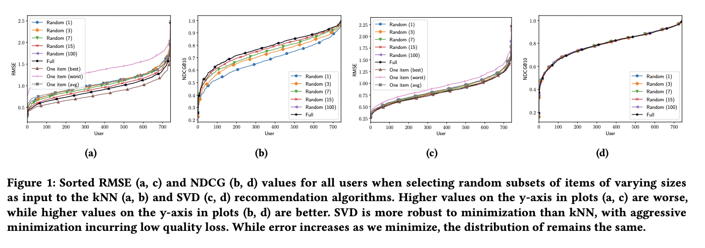
This in in comparison to per-user data minimization, in Figure 10:
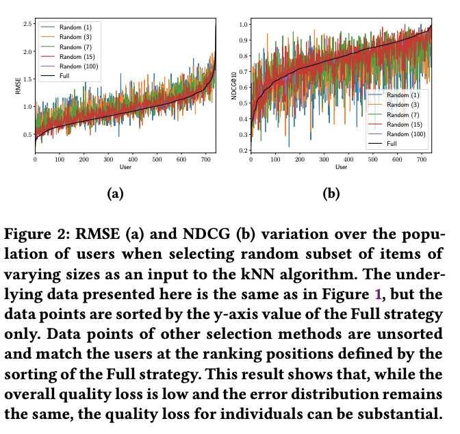
Global data minimization seems to be a much more feasible method of data minimization compared to per-user data minimization, given the much more significant difference in per-user losses between the minimized dataset and original dataset.
15.7.5 Consent and Transparency
Meaningful consent and transparency are crucial when collecting user data for embedded ML products like smart speakers, wearables, and autonomous vehicles. When first setup, ideally, the device should clearly explain what data types are gathered, for what purposes, how they are processed, and retention policies. For example, a smart speaker might collect voice samples to train speech recognition and personalized voice profiles. During use, reminders and dashboard options give ongoing transparency into how data is handled, such as weekly digests of voice snippets captured. Control options allow revoking or limiting consent, like disabling storage of voice profiles.
Consent flows should provide granular controls beyond just binary yes/no choices. For instance, users could selectively consent to certain data uses like training speech recognition but not personalization. Focus groups and usability testing with target users shape consent interfaces and wording of privacy policies to optimize comprehension and control. Respecting user rights like data deletion and rectification demonstrates trustworthiness. Vague legal jargon hampers transparency. Regulations like GDPR and CCPA reinforce consent requirements. Thoughtful consent and transparency provide users agency over their data while building trust in embedded ML products through open communication and control.
15.7.6 Privacy Concerns in Machine Learning
Generative AI
With the rise of public use of generative AI models, including OpenAI’s GPT4 and other LLMs, privacy and security concerns have also risen. ChatGPT in particular has been discussed more recently in relation to privacy, given all the personal information collected from ChatGPT users. In June, a class action lawsuit was filed against ChatGPT due to concerns that it was trained on proprietary medical and personal information without proper permissions or consent. As a result of these privacy concerns, many companies have prohibited their employees from accessing ChatGPT, and uploading private, company related information to the chatbot. Further, ChatGPT has been shown to be susceptible to prompt injection attacks and other security attacks that could compromise the privacy of the proprietary data it was trained upon.
Case Study
While ChatGPT has instituted protections to prevent people from accessing private and ethically questionable information, several individuals have successfully been able to bypass these protections through prompt injection attacks, and other security attacks. As demonstrated in Figure 11, users have been able to bypass ChatGPT protections to mimic the tone of a “deceased grandmother” to learn how to bypass a web application firewall (Gupta et al. 2023).
Further, users have also successfully been able to use reverse psychology to manipulate ChatGPT and access information initially prohibited by the model. In Figure 12, a user is initially prevented from learning about piracy websites through ChatGPT, but is easily able to bypass these restrictions using reverse psychology.
The ease at which ChatGPT can be manipulated by security attacks is concerning given the private information it was trained upon without consent. Further research on data privacy in LLMs and generative AI should focus on preventing the model from being so naive to prompt injection attacks.
Data Erasure
Many of the previous regulations mentioned above, including GDPR, include a “right to be forgotten” clause. This clause essentially states that “the data subject shall have the right to obtain from the controller the erasure of personal data concerning him or her without undue delay.” However, in several cases, even if user data has been erased from a platform, the data is not completely erased if a machine learning model has been trained on this data for separate purposes. Through methods similar to membership inference attacks, other individuals can still predict the training data that a model was trained upon even if the data’s presence was explicitly removed online.
One approach to addressing privacy concerns with machine learning training data has been through differential privacy methods. Through the addition of Laplacian noise in the training set, for example, a model can be robust to membership inference attacks, preventing deleted data from being recovered. Another approach to preventing deleted data from being inferred from security attacks is also by simply retraining the model from scratch on the remaining data. Since this process is time consuming and computationally expensive, other researchers have attempted to address privacy concerns surrounding inferring model training data through a process called machine unlearning, in which a model actively iterates on itself to remove the influence of “forgotten” data that it might have been trained on, as mentioned below.
15.8 Privacy-Preserving ML Techniques
A myriad of techniques have been developed to preserve privacy, each addressing different aspects and challenges of data security. These methods can be broadly categorized into several key areas: Differential Privacy, which focuses on statistical privacy in data outputs; Federated Learning, emphasizing decentralized data processing; Homomorphic Encryption and Secure Multi-party Computation (SMC), both enabling secure computations on encrypted or private data; Data Anonymization and Data Masking and Obfuscation, which alter data to protect individual identities; Private Set Intersection and Zero-Knowledge Proofs, facilitating secure data comparisons and validations; Decentralized Identifiers (DIDs) for self-sovereign digital identities; Privacy-Preserving Record Linkage (PPRL), linking data across sources without exposure; Synthetic Data Generation, creating artificial datasets for safe analysis; and Adversarial Learning Techniques, enhancing data or model resistance to privacy attacks.
Given the extensive range of these techniques, it is not feasible to delve into each in depth within a single course or discussion, let alone for any one person to know it all in its glorious detail. Therefore, we will focus on exploring a few specific techniques in relative detail, providing a deeper understanding of their principles, applications, and the unique privacy challenges they address in machine learning. This focused approach will allow us to have a more comprehensive and practical understanding of key privacy-preserving methods in the context of modern ML systems.
15.8.1 Differential Privacy
Core Idea
Differential Privacy is a framework for quantifying and managing the privacy of individuals in a dataset (Dwork et al. 2006). It provides a mathematical guarantee that the privacy of individuals in the dataset will not be compromised, regardless of any additional knowledge an attacker may possess. The core idea of differential privacy is that the outcome of any analysis (like a statistical query) should be essentially the same, whether any individual’s data is included in the dataset or not. This means that by observing the result of the analysis, one cannot determine whether any individual’s data was used in the computation.
For example, let’s say a database contains medical records for 10 patients. We want to release statistics about the prevalence of diabetes in this sample without revealing any one patient’s condition. To do this, we could add a small amount of random noise to the true count before releasing it. If the true number of diabetes patients is 6, we might add noise from a Laplace distribution to randomly output 5, 6, or 7 each with some probability. An observer now can’t tell if any single patient has diabetes based only on the noisy output. The query result looks similar whether each patient’s data is included or excluded. This is differential privacy. More formally, a randomized algorithm satisfies ε-differential privacy if for any two neighbor databases D and Dʹ differing by only one entry, the probability of any outcome changes by at most a factor of ε. A lower ε provides stronger privacy guarantees.
The Laplace Mechanism is one of the most straightforward and commonly used methods to achieve differential privacy. It involves adding noise that follows a Laplace distribution to the data or query results. Apart from the Laplace Mechanism, the general principle of adding noise is central to differential privacy. The idea is to add random noise to the data or the results of a query. The noise is calibrated to ensure that it provides the necessary privacy guarantee while keeping the data useful.
While the Laplace distribution is common, other distributions like Gaussian can also be used. Laplace noise is used for strict ε-differential privacy for low-sensitivity queries while Gaussian distributions can be used when privacy does not need to be guaranteed, which is known as (ϵ, 𝛿)-differential privacy. In this relaxed version of differential privacy, epsilon and delta are parameters that define the amount of privacy guarantee when releasing information or a model related to a dataset. Epsilon sets a bound on how much information can be learned about the data based on the output while delta allows for a small probability of the privacy guarantee to be violated. The choice between Laplace, Gaussian, and other distributions will depend on the specific requirements of the query and the dataset and the trade-off between privacy and accuracy.
To illustrate the trade-off of privacy and accuracy in (ϵ, 𝛿)-differential privacy, the following graphs in Figure 13 show the results on accuracy for different noise levels on the MNIST dataset, a large dataset of handwritten digits (Abadi et al. 2016). An increasing delta value relaxes the privacy guarantee, so the noise level can be reduced. Since the data will retain many of its original characteristics, accuracy simultaneously increases with drawbacks on privacy preservation. This trade-off is fundamental to differential privacy.
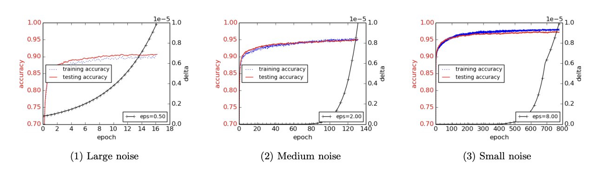
The key points to remember about differential privacy is the following:
Adding Noise: The fundamental technique in differential privacy is adding controlled random noise to the data or query results.This noise masks the contribution of individual data points.
Balancing Act: There’s a balance between privacy and accuracy.More noise (lower ϵ) in the data means higher privacy but less accuracy in the model’s results.
Universality: Differential privacy doesn’t rely on assumptions about what an attacker knows. This makes it robust against re-identification attacks, where an attacker tries to uncover individual data.
Applicability: It’s applicable to various types of data and queries, making it a versatile tool for privacy-preserving data analysis.
Trade-offs
There are several trade-offs to make with differential privacy, as is the case with any algorithm. But let’s focus on the computational specific trade-offs since we care about ML systems. There are some key computational considerations and tradeoffs when implementing differential privacy in a machine learning system:
Noise generation: Implementing differential privacy introduces several important computational tradeoffs compared to standard machine learning techniques. One major consideration is the need to securely generate random noise from distributions like Laplace or Gaussian that get added to query results and model outputs. High-quality cryptographic random number generation can be computationally expensive.
Sensitivity analysis: Another key requirement is rigorously tracking the sensitivity of the underlying algorithms to single data points getting added or removed. This global sensitivity analysis is required to properly calibrate the noise levels. However, for complex model training procedures and data pipelines, analyzing worst-case sensitivity can substantially increase computational complexity.
Privacy budget management: Managing the privacy loss budget across multiple queries and learning iterations is another bookkeeping overhead. The system needs to keep track of cumulative privacy costs and compose them to reason about overall privacy guarantees. This adds computational burden beyond just running queries or training models.
Batch vs online tradeoffs: For online learning systems with continuous high-volume queries, differentially private algorithms require new mechanisms to maintain utility and prevent too much accumulated privacy loss since each query has the potential to alter the privacy budget. Batch offline processing is simpler from a computational perspective as it processes data in large batches where each batch is treated as a single query. High-dimensional sparse data also increases sensitivity analysis challenges.
Distributed training: When training models using distributed or federated approaches, new cryptographic protocols are needed to track and bound privacy leakage across nodes. Secure multi-party computation with encrypted data for differential privacy also adds substantial computational load.
While differential privacy provides strong formal privacy guarantees, implementing it rigorously requires additions and modifications to the machine learning pipeline that come at a computational cost. Managing these overheads while preserving model accuracy remains an active research area.
Case Study
Apple’s implementation of differential privacy in iOS and MacOS provides a prominent real-world example of how differential privacy can be deployed at large scale. Apple wanted to collect aggregated usage statistics across their ecosystem to improve products and services, but aimed to do so without compromising individual user privacy.
To achieve this, they implemented differential privacy techniques directly on user devices to anonymize data points before they are sent to Apple servers. Specifically, Apple uses the Laplace mechanism to inject carefully calibrated random noise. For example, if a user’s location history contained [Work, Home, Work, Gym, Work, Home], the differentially private version might replace the exact locations with a noisy sample like [Gym, Home, Work, Work, Home, Work].
Apple tunes the Laplace noise distribution to provide a high level of privacy while still preserving utility of the aggregated statistics. Increasing noise levels provides stronger privacy guarantees (lower ε values in DP terminology), but can reduce data utility. Apple’s privacy engineers empirically optimized this tradeoff based on their product goals.
By aggregating hundreds of millions of noisy data points from devices, Apple obtains high fidelity aggregated statistics. For instance, they can analyze features used in new iOS apps while provably masking any one user’s app behaviors. On-device computation avoids sending raw data to Apple servers.
The system uses hardware-based secure random number generation to efficiently sample from the Laplace distribution on devices. Apple also had to optimize their differentially private algorithms and pipeline to operate under the computational constraints of consumer hardware.
Multiple third-party audits have verified that Apple’s system provides rigorous differential privacy protections in line with their stated policies. Of course, assumptions around composition over time and potential re-identification risks still apply. But overall, Apple’s deployment shows how differential privacy can be realized in large real-world products when backed by sufficient engineering resources.
15.8.2 Federated Learning
Core Idea
Federated Learning (FL) is a type of machine learning where the process of building a model is distributed across multiple devices or servers, while keeping the training data localized. It was previously discussed in the Model Optimizations chapter, but we will recap it here briefly for the purposes of completion and focus on things that pertain to this chapter.
FL aims to train machine learning models across decentralized networks of devices or systems while keeping all training data localized. In FL, each participating device leverages its local data to calculate model updates which are then aggregated to build an improved global model. However, the raw training data itself is never directly shared, transferred, or compiled together. This privacy-preserving approach allows jointly developing ML models without centralizing the potentially sensitive training data in one place.
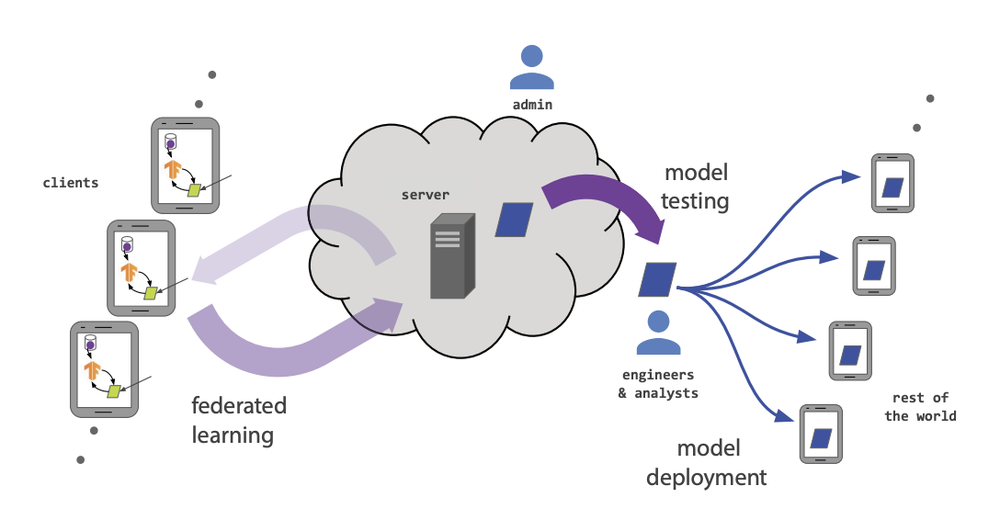
One of the most common model aggregation algorithms is Federated Averaging (FedAvg) where the global model is created by averaging all of the parameters from local parameters. While FedAvg works well with independent and identically distributed data (IID), alternate algorithms like Federated Proximal (FedProx) are crucial in real-world applications where data is often non-IID. FedProx is designed for the FL process when there is significant heterogeneity in the client updates due to diverse data distributions across devices, computational capabilities, or varied amounts of data.
By leaving the raw data distributed and exchanging only temporary model updates, federated learning provides a more secure and privacy-enhancing alternative to traditional centralized machine learning pipelines. This allows organizations and users to collaboratively benefit from shared models while maintaining control and ownership over their sensitive data. The decentralized nature of FL also makes it robust to single points of failure.
Imagine a group of hospitals that want to collaborate on a study to predict patient outcomes based on their symptoms. However, due to privacy concerns and regulations like HIPAA, they cannot share their patient data with each other. Here’s how Federated Learning can help.
Local Training: Each hospital trains a machine learning model on its own patient data. This training happens locally, meaning thedata never leaves the hospital’s servers.
Model Sharing: After training, each hospital only sends the model (specifically, the parameters or weights of the model) to acentral server. They do not send any patient data.
Aggregating Models: The central server aggregates these models from all hospitals into a single, more robust model. This process typically involves averaging the model parameters.
Benefit: The end result is a machine learning model that has learned from a wide range of patient data without any of that sensitive data having to be shared or leave its original location.
Trade-offs
There are several system performance-related aspects of FL in machine learning systems. It would be wise to understand these trade-offs because there is no “free lunch” for preserving privacy through FL (Li et al. 2020).
Communication Overhead and Network Constraints: In FL, one of the most significant challenges is managing the communication overhead. This involves the frequent transmission of model updates between a central server and numerous client devices, which can be bandwidth-intensive. The total number of communication rounds and the size of transmitted messages per round needs to be reduced in order to further minimize communication. Especially in scenarios with a large number of participants, this can lead to substantial network traffic. Additionally, latency becomes a critical factor — the time taken for these updates to be sent, aggregated, and redistributed can introduce delays. This not only affects the overall training time but also impacts the responsiveness and real-time capabilities of the system. Efficiently managing this communication while minimizing bandwidth usage and latency is crucial for the practical implementation of FL.
Computational Load on Local Devices: FL relies on client devices (like smartphones or IoT devices, which especially matters in TinyML) for model training, which often have limited computational power and battery life. Running complex machine learning algorithms locally can strain these resources, leading to potential performance issues. Moreover, the capabilities of these devices can vary significantly, resulting in uneven contributions to the model training process. Some devices might process updates faster and more efficiently than others, leading to disparities in the learning process. Balancing the computational load to ensure consistent participation and efficiency across all devices is a key challenge in FL.
Model Training Efficiency: The decentralized nature of FL can impact the efficiency of model training. Achieving convergence, where the model no longer significantly improves, can be slower in FL compared to centralized training methods. This is particularly true in cases where the data is non-IID (non-independent and identically distributed) across devices. Additionally, the algorithms used for aggregating model updates play a critical role in the training process. Their efficiency directly affects the speed and effectiveness of learning. Developing and implementing algorithms that can handle the complexities of FL while ensuring timely convergence is essential for the system’s performance.
Scalability Challenges: Scalability is a significant concern in FL, especially as the number of participating devices increases. Managing and coordinating model updates from a large number of devices adds complexity and can strain the system. Ensuring that the system architecture can efficiently handle this increased load without degrading performance is crucial. This involves not just handling the computational and communication aspects but also maintaining the quality and consistency of the model as the scale of the operation grows. Designing FL systems that can scale effectively while maintaining performance is a key challenge.
Data Synchronization and Consistency: Ensuring data synchronization and maintaining model consistency across all participating devices in FL is challenging. In environments with intermittent connectivity or devices that go offline periodically, keeping all devices synchronized with the latest model version can be difficult. Furthermore, maintaining consistency in the learned model, especially when dealing with a wide range of devices with different data distributions and update frequencies, is crucial. This requires sophisticated synchronization and aggregation strategies to ensure that the final model accurately reflects the learnings from all devices.
Energy Consumption: The energy consumption of client devices in FL is a critical factor, particularly for battery-powered devices like smartphones and other TinyML/IoT devices. The computational demands of training models locally can lead to significant battery drain, which might discourage continuous participation in the FL process. Balancing the computational requirements of model training with energy efficiency is essential. This involves optimizing algorithms and training processes to reduce energy consumption while still achieving effective learning outcomes. Ensuring energy-efficient operation is key to user acceptance and the sustainability of FL systems.
Case Studies
Here are a couple of real-world case studies that can illustrate the use of federated learning:
Google Gboard
Google uses federated learning to improve predictions on its Gboard mobile keyboard app. The app runs a federated learning algorithm on users’ devices to learn from their local usage patterns and text predictions while keeping user data private. The model updates are aggregated in the cloud to produce an enhanced global model. This allows providing next-word prediction personalized to each user’s typing style, while avoiding directly collecting sensitive typing data. Google reported the federated learning approach reduced prediction errors by 25% compared to baseline while preserving privacy.
Healthcare Research
The UK Biobank and American College of Cardiology combined datasets to train a model for heart arrhythmia detection using federated learning. The datasets could not be combined directly due to legal and privacy restrictions. Federated learning allowed collaborative model development without sharing protected health data, with only model updates exchanged between the parties. This improved model accuracy as it could leverage a wider diversity of training data while meeting regulatory requirements.
Financial Services
Banks are exploring using federated learning for anti-money laundering (AML) detection models. Multiple banks could jointly improve AML Models without having to share confidential customer transaction data with competitors or third parties. Only the model updates need to be aggregated rather than raw transaction data. This allows access to richer training data from diverse sources while avoiding regulatory and confidentiality issues around sharing sensitive financial customer data.
These examples demonstrate how federated learning provides tangible privacy benefits and enables collaborative ML in settings where direct data sharing is not possible.
15.8.3 Machine Unlearning
Core Idea
Machine unlearning is a fairly new process, describing the methods in which the influence of a subset of training data can be removed from the model. There are several methods that have been used to perform machine unlearning and remove the influence of a subset of training data from the final model. A baseline approach might consist of simply fine tuning the model for more epochs on just the data that should be remembered, in order to decrease the influence of the data that should be “forgotten” by the model. Since this approach doesn’t explicitly remove the influence of data that should be erased, membership inference attacks are still possible, so researchers have adopted other approaches to explicitly unlearn data from a model. One type of approach that researchers have adopted includes adjusting the model loss function to explicitly treat the losses of the “forget set” (data to be unlearned) and the “retain set” (remaining data that should still be remembered) differently (Tarun et al. 2023; Khan and Swaroop 2021).
Case Study
Some researchers demonstrate a real life example of machine unlearning approaches applied to SOTA machine learning models through training an LLM, LLaMA2-7b, to unlearn any references to Harry Potter (Eldan and Russinovich 2023). Though this model took 184K GPU-hours to pretrain, it only took 1 GPU hour of fine tuning to erase the model’s ability to generate or recall Harry Potter-related content, without noticeably compromising the accuracy of generating content unrelated to Harry Potter. Table 1 demonstrates how the model output changes before and after unlearning has occurred.
Other Uses
Removing adversarial data
Deep learning models have previously been shown to be vulnerable to adversarial attacks, in which the attacker generates adversarial data similar to the original training data, to the point where a human cannot tell the difference between the real and fabricated data. The adversarial data results in the model outputting incorrect predictions, which could have detrimental consequences in various applications, including healthcare diagnoses predictions. Machine unlearning has been used to unlearn the influence of adversarial data to prevent these incorrect predictions from occurring and causing any harm
15.8.4 Homomorphic Encryption
Core Idea
Homomorphic encryption is a form of encryption that allows computations to be carried out on ciphertext, generating an encrypted result that, when decrypted, matches the result of operations performed on the plaintext. For example, multiplying two numbers encrypted with homomorphic encryption produces an encrypted product that decrypts the actual product of the two numbers. This means that data can be processed in an encrypted form, and only the resulting output needs to be decrypted, significantly enhancing data security, especially for sensitive information.
Homomorphic encryption enables outsourced computation on encrypted data without exposing the data itself to the external party performing the operations. However, only certain computations like addition and multiplication are supported in partially homomorphic schemes. Fully homomorphic encryption (FHE) that can handle any computation is even more complex. The number of possible operations is limited before noise accumulation corrupts the ciphertext.
To use homomorphic encryption across different entities, carefully generated public keys need to be exchanged to carry out operations across separately encrypted data. This advanced encryption technique enables previously impossible secure computation paradigms but requires expertise to implement correctly for real-world systems.
Benefits
Homomorphic encryption enables machine learning model training and inference on encrypted data, ensuring that sensitive inputs and intermediate values remain confidential. This is critical in healthcare, finance, genetics, and other domains increasingly relying on ML to analyze sensitive and regulated data sets containing billions of personal records.
Homomorphic encryption thwarts attacks like model extraction and membership inference that could expose private data used in ML workflows. It provides an alternative to trusted execution environments using hardware enclaves for confidential computing. However, current schemes have high computational overheads and algorithmic limitations that constrain real-world applications.
Homomorphic encryption realizes the decades-old vision of secure multiparty computation by allowing computation on ciphertexts. After being conceptualized in the 1970s, the first fully homomorphic crypto systems emerged in 2009, enabling arbitrary computations. Ongoing research is making these techniques more efficient and practical.
Homomorphic encryption shows great promise in enabling privacy-preserving machine learning under emerging data regulations. However given constraints, one should carefully evaluate its applicability against other confidential computing approaches. Extensive resources exist to explore homomorphic encryption and track progress in easing adoption barriers.
Mechanics
Data Encryption: Before data is processed or sent to a ML model, it is encrypted using a homomorphic encryption scheme and public key. For example, encrypting numbers \(x\) and \(y\) generates ciphertexts \(E(x)\) and \(E(y)\).
Computation on Ciphertext: The ML algorithm processes the encrypted data directly. For instance, multiplying the ciphertexts \(E(x)\) and \(E(y)\) generates \(E(xy)\). More complex model training can also be done on ciphertexts.
Result Encryption: The result \(E(xy)\) remains encrypted and can only be decrypted by someone with the corresponding private key to reveal the actual product \(xy\).
Only authorized parties with the private key can decrypt the final outputs, protecting the intermediate state. However, noise accumulates with each operation eventually preventing further computation without decryption.
Beyond healthcare, homomorphic encryption enables confidential computing for applications like financial fraud detection, insurance analytics, genetics research, and more. It offers an alternative to techniques like multi-party computation and TEEs. Ongoing research aims to improve the efficiency and capabilities.
Tools like HElib, SEAL, and TensorFlow HE provide libraries to explore implementing homomorphic encryption for real-world machine learning pipelines.
Trade-offs
For many real-time and embedded applications, fully homomorphic encryption remains impractical for the following reasons.
Computational Overhead: Homomorphic encryption imposes very high computational overheads, often resulting in slowdowns of over 100x for real-world ML applications. This makes it impractical for many time-sensitive or resource-constrained uses. Optimized hardware and parallelization can help but not eliminate this issue.
Complexity of Implementation: The sophisticated algorithms require deep expertise in cryptography to implement correctly. Nuances like format compatibility with floating point ML models and scalable key management pose hurdles. This complexity hinders widespread practical adoption.
Algorithmic Limitations: Current schemes restrict the functions and depth of computations supported, limiting the models and data volumes that can be processed. Ongoing research is pushing these boundaries but restrictions remain.
Hardware Acceleration: To be feasible, homomorphic encryption requires specialized hardware like secure processors or co-processors with trusted execution environments. This adds design and infrastructure costs.
Hybrid Designs: Rather than encrypting entire workflows, selective application of homomorphic encryption to critical subcomponents can achieve protection while minimizing overheads.
15.8.5 Secure Multi-Party Communication
Core Idea
The overarching goal of MPC is to enable different parties to jointly compute a function over their inputs while keeping those inputs private. For example, two organizations may want to collaborate on training a machine learning model by combining their respective data sets, but cannot directly reveal that data to each other due to privacy or confidentiality constraints. MPC aims to provide protocols and techniques that allow them to achieve the benefits of pooled data for model accuracy, without compromising the privacy of each organization’s sensitive data.
At a high level, MPC works by carefully splitting up the computation into separate parts that can be executed independently by each party using their own private input. The results are then combined in a manner that reveals only the final output of the function and nothing about the intermediate values. Cryptographic techniques are used to provably guarantee that the partial results remain private.
Let’s take a simple example of an MPC protocol. One of the most basic MPC protocols is secure addition of two numbers. Each party splits their input into random shares that are secretly distributed. They exchange the shares and locally compute the sum of the shares which reconstructs the final sum without revealing the individual inputs. For example, if Alice has input x and Bob has input y:
Alice generates random \(x_1\) and sets \(x_2 = x - x_1\)
Bob generates random \(y_1\) and sets \(y_2 = y - y_1\)
Alice sends \(x_1\) to Bob, Bob sends \(y_1\) to Alice (keeping \(x_2\) and \(y_2\) secret)
Alice computes \(x_2 + y_1 = s_1\), Bob computes \(x_1 + y_2 = s_2\)
\(s_1 + s_2 = x + y\) is the final sum, without revealing \(x\) or \(y\).
Alice’s and Bob’s individual inputs (\(x\) and \(y\)) remain private, and each party only reveals one number associated with their original inputs. The random spits ensure no information about the original numbers disclosed
Secure Comparison: Another basic operation is secure comparison of two numbers, determining which is greater than the other. This can be done using techniques like Yao’s Garbled Circuits where the comparison circuit is encrypted to allow joint evaluation on the inputs without leaking them.
Secure Matrix Multiplication: Matrix operations like multiplication are essential for machine learning. MPC techniques like additive secret sharing can be used to split matrices into random shares, compute products on the shares, then reconstruct the result.
Secure Model Training: Distributed machine learning training algorithms like federated averaging can be made secure using MPC. Model updates computed on partitioned data at each node are secretly shared between nodes and aggregated to train the global model without exposing individual updates.
The core idea behind MPC protocols is to divide the computation into steps that can be executed jointly without revealing intermediate sensitive data. This is accomplished by combining cryptographic techniques like secret sharing, homomorphic encryption, oblivious transfer, and garbled circuits. MPC protocols enable collaborative computation on sensitive data while providing provable privacy guarantees. This privacy-preserving capability is essential for many machine learning applications today involving multiple parties that cannot directly share their raw data.
The main approaches used in MPC include:
Homomorphic encryption: Special encryption allows computations to be carried out on encrypted data without decrypting it.
Secret sharing: The private data is divided into random shares that are distributed to each party. Computations are done locally on the shares and finally reconstructed.
Oblivious transfer: A protocol where a receiver obtains a subset of data from a sender, but the sender does not know which specific data was transferred.
Garbled circuits: The function to be computed is represented as a Boolean circuit that is encrypted (“garbled”) in a way that allows joint evaluation without revealing inputs.
Trade-offs
While MPC protocols provide strong privacy guarantees, they come at a high computational cost compared to plain computations. Every secure operation like addition, multiplication, comparison, etc requires orders of magnitude more processing than the equivalent unencrypted operation. This overhead stems from the underlying cryptographic techniques:
In partially homomorphic encryption, each computation on ciphertexts requires costly public-key operations. Fully homomorphic encryption has even higher overheads.
Secret sharing divides data into multiple shares, so even basic operations require manipulating many shares.
Oblivious transfer and garbled circuits add masking and encryption to hide data access patterns and execution flows.
MPC systems require extensive communication and interaction between parties to jointly compute on shares/ciphertexts.
As a result, MPC protocols can slow down computations by 3-4 orders of magnitude compared to plain implementations. This becomes prohibitively expensive for large datasets and models. Therefore, training machine learning models on encrypted data using MPC remains infeasible today for realistic dataset sizes due to the overhead. Clever optimizations and approximations are needed to make MPC practical.
Ongoing MPC research aims to close this efficiency gap through cryptographic advances, new algorithms, trusted hardware like SGX enclaves, and leveraging accelerators like GPUs/TPUs. But for the foreseeable future, some degree of approximation and performance tradeoff is likely needed to scale MPC to the demands of real-world machine learning systems.
15.8.6 Synthetic Data Generation
Core Idea
Synthetic data generation has emerged as an important privacy-preserving machine learning approach that allows models to be developed and tested without exposing real user data. The key idea is to train generative models on real-world datasets, then sample from these models to synthesize artificial data that statistically matches the original data distribution but does not contain actual user information. For example, a GAN could be trained on a dataset of sensitive medical records to learn the underlying patterns, then used to sample synthetic patient data.
The primary challenge of synthesizing data is to ensure adversaries are unable to re-identify the original dataset. A simple approach to achieving synthetic data is to add noise to the original dataset, but this still risks privacy leakage. When noise is added to data in the context of differential privacy, it involves sophisticated mechanisms based on data’s sensitivity to calibrate amount and distribution of noise. Through these mathematically rigorous frameworks, differential privacy generally guarantees privacy at some level which is the primary goal of this privacy-preserving technique. Beyond preserving privacy, synthetic data, however, combats multiple data availability issues such as imbalanced datasets, scarce datasets, and anomaly detection.
Researchers can freely share this synthetic data and collaborate on modeling without revealing any private medical information. Well-constructed synthetic data protects privacy while providing utility for developing accurate models. Key techniques to prevent reconstruction of the original data include adding differential privacy noise during training, enforcing plausibility constraints, and using multiple diverse generative models. Here are some common approaches for generating synthetic data:
- Generative Adversarial Networks (GANs): GANs (see Figure 15) are a type of AI algorithm used in unsupervised learning where two neural networks contest against each other in a game. The generator network is responsible for producing the synthetic data and the discriminator network evaluates the authenticity of the data by distinguishing between fake data created by the generator network and the real data. The discriminator acts as a metric on how similar the fake and real data are to one another. It is highly effective at generating realistic data and is, therefore, a popular approach for generating synthetic data.
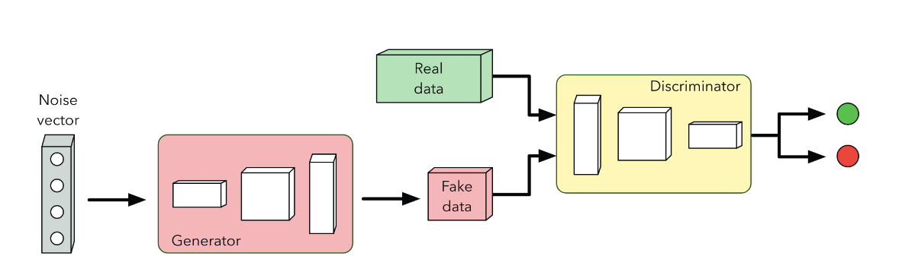
Variational Autoencoders (VAEs): VAEs are neural networks that are capable of learning complex probability distributions and balance between data generation quality and computational efficiency. They encode data into a latent space where they learn the distribution in order to decode the data back.
Data Augmentation: This involves applying transformations to existing data to create new, altered data. For example, flipping,rotating, and scaling (uniformly or non-uniformly) original images can help create a more diverse, robust image dataset before training an ML model.
Simulations: Mathematical models can simulate real-world systems or processes to mimic real-world phenomena. This is highly useful in scientific research, urban planning, and economics.
Benefits
While synthetic data may be necessary due to privacy or compliance risks, it is widely used in machine learning models when available data is of poor quality, scarce, or inaccessible. Synthetic data offers more efficient and effective development by streamlining robust model training, testing and deployment processes. It allows models to be shared more widely among researchers without breaching privacy laws and regulations. Collaboration between users of the same dataset will be facilitated which will help broaden the capabilities and advancements in ML research.
There are several motivations for using synthetic data in machine learning:
Privacy and compliance: Synthetic data avoids exposing personal information, allowing more open sharing and collaboration. This is important when working with sensitive datasets like healthcare records or financial information.
Data scarcity: When insufficient real-world data is available,synthetic data can augment training datasets. This improves model accuracy when limited data is a bottleneck.
Model testing: Synthetic data provides privacy-safe sandboxes for testing model performance, debugging issues, and monitoring for bias.
Data labeling: High-quality labeled training data is often scarce and expensive. Synthetic data can help auto-generate labeled examples.
Trade-offs
While synthetic data aims to remove any evidence of the original dataset, privacy leakage is still a risk since the synthetic data is mimicking the original data. The statistical information and distribution is similar, if not the same, between the original and synthetic data. By resampling from the distribution, adversaries may still be able to recover the original training samples. Due to their inherent learning processes and complexities,neural networks might accidentally reveal sensitive information about the original training data.
A core challenge with synthetic data is the potential gap between synthetic and real-world data distributions. Despite advancements in generative modeling techniques, synthetic data may not fully capture the complexity, diversity, and nuanced patterns of real data. This can limit the utility of synthetic data for robustly training machine learning models. Rigorously evaluating synthetic data quality through techniques like adversary methods and comparing model performance to real data benchmarks helps assess and improve fidelity. But inherently, synthetic data remains an approximation.
Another critical concern is the privacy risks of synthetic data. Generative models may leak identifiable information about individuals in the training data that could enable reconstruction of private information. Emerging adversarial attacks demonstrate the challenges in preventing identity leakage from synthetic data generation pipelines. Techniques like differential privacy ca help safeguard privacy but come with tradeoffs in data utility. There is an inherent tension between producing useful synthetic data and fully protecting sensitive training data that must be balanced.
Additional pitfalls of synthetic data include amplified biases, labeling difficulties, computational overhead of training generative models, storage costs, and failure to account for out-of-distribution novel data. While these are secondary to the core synthetic-real gap and privacy risks, they remain important considerations when evaluating the suitability of synthetic data for particular machine learning tasks. As with any technique, the advantages of synthetic data come with inherent tradeoffs and limitations that require thoughtful mitigation strategies.
15.8.7 Summary
While all the techniques we have discussed thus far aim to enable privacy-preserving machine learning, they involve distinct mechanisms and tradeoffs. Factors like computational constraints, required trust assumptions, threat models, and data characteristics help guide the selection process for a particular use case. But finding the right balance between privacy, accuracy and efficiency necessitates experimentation and empirical evaluation for many applications. Below is a comparison table of the key privacy-preserving machine learning techniques and their pros and cons:
| Technique | Pros | Cons |
|---|---|---|
| Differential Privacy | Strong formal privacy guarantees Robust to auxiliary data attacks Versatile for many data types and analyses |
Accuracy loss from noise addition Computational overhead for sensitivity analysis and noise generation |
| Federated Learning | Allows collaborative learning without sharing raw data Data remains decentralized improving security No need for encrypted computation |
Increased communication overhead Potentially slower model convergence Uneven client device capabilities |
| Secure Multi-Party Computation | Enables joint computation on sensitive data Provides cryptographic privacy guarantees Flexible protocols for various functions |
Very high computational overhead Complexity of implementation Algorithmic constraints on function depth |
| Homomorphic Encryption | Allows computation on encrypted data Prevents intermediate state exposure |
Extremely high computational cost Complex cryptographic implementations Restrictions on function types |
| Synthetic Data Generation | Enables data sharing without leakage Mitigates data scarcity problems |
Synthetic-real gap in distributions Potential for reconstructing private data Biases and labeling challenges |
15.9 Conclusion
Machine learning hardware security is a critical concern as embedded ML systems are increasingly deployed in safety-critical domains like medical devices, industrial controls, and autonomous vehicles. We have explored various threats spanning hardware bugs, physical attacks, side channels, supply chain risks and more. Defenses like trusted execution environments, secure boot, PUFs, and hardware security modules provide multilayer protection tailored for resource-constrained embedded devices.
However, continual vigilance is essential to track emerging attack vectors and address potential vulnerabilities through secure engineering practices across the hardware lifecycle. As ML and embedded ML spreads, maintaining rigorous security foundations that match the field’s accelerating pace of innovation remains imperative.